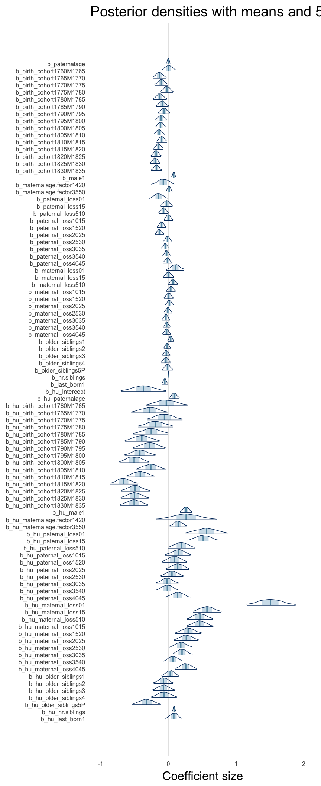
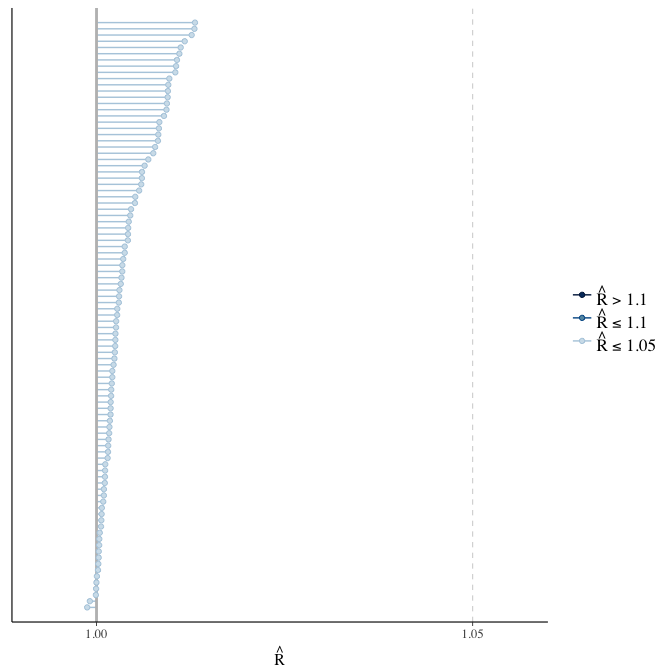
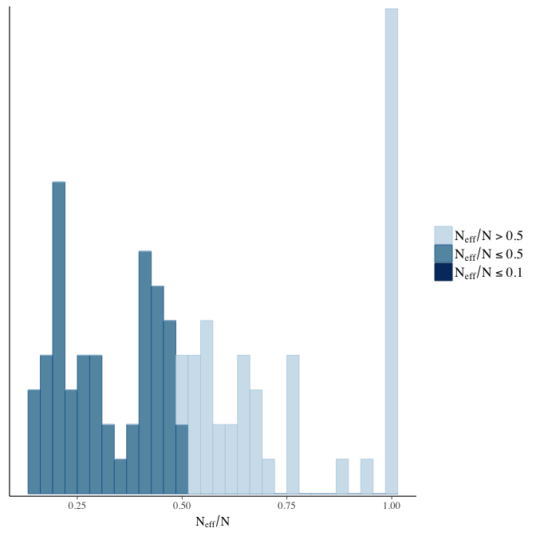
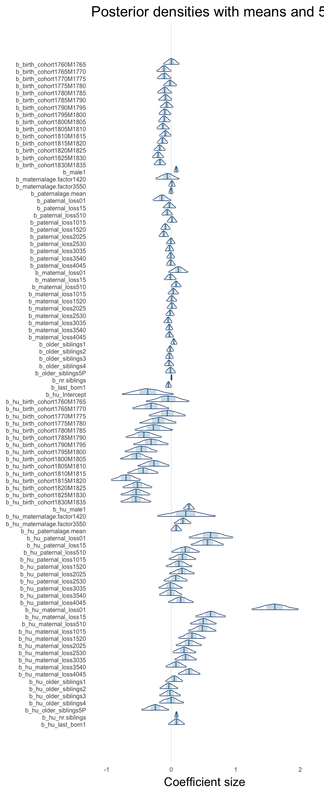
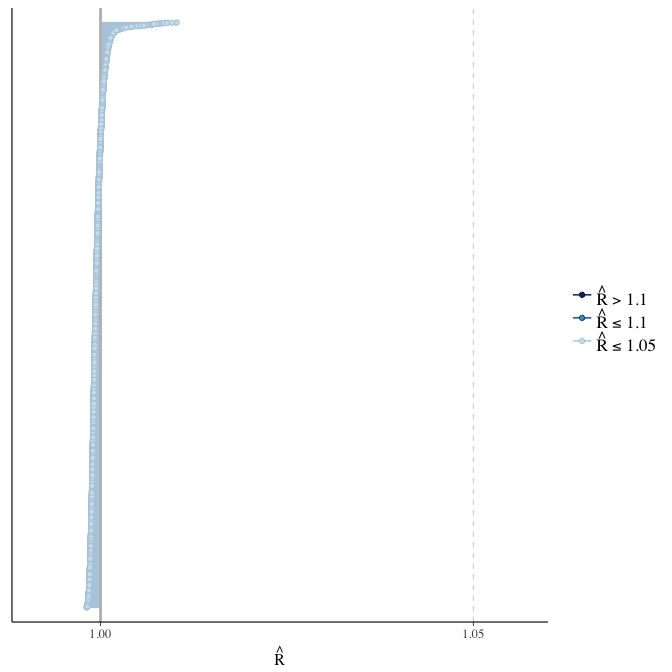
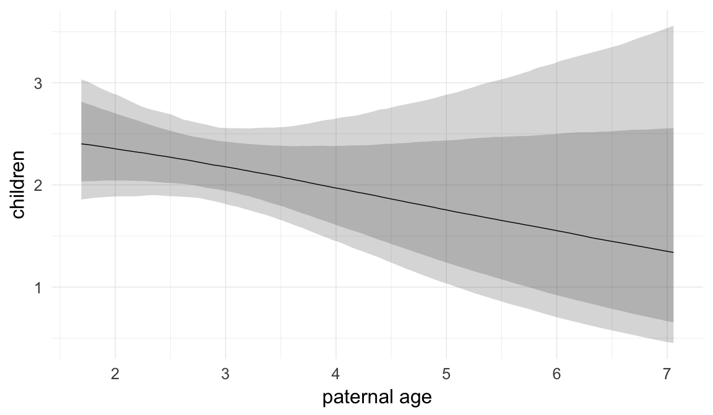
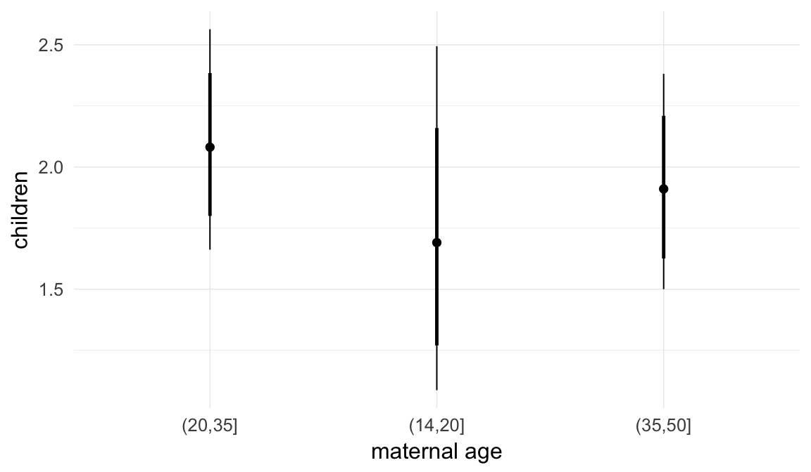
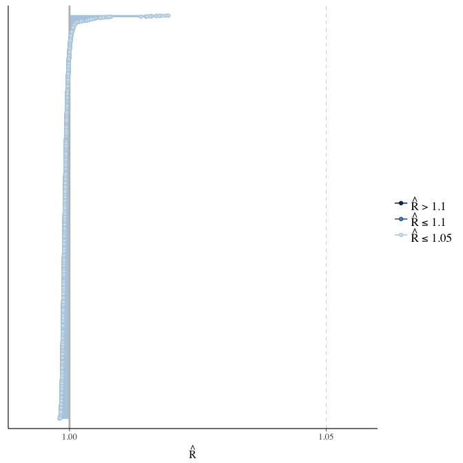
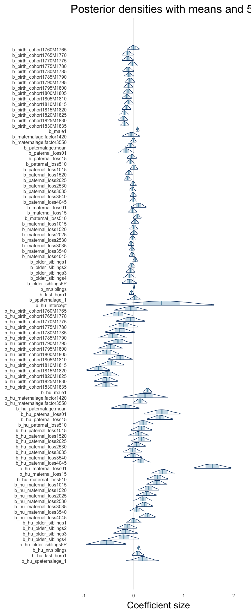
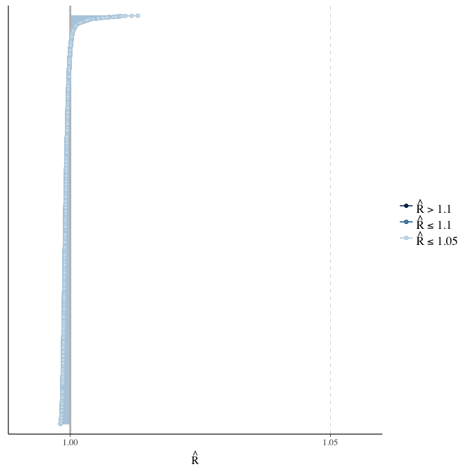

Krummhörn (1720-1850) main models
Loading details
source("0__helpers.R")
opts_chunk$set(warning=TRUE, cache = FALSE,tidy=FALSE,dev=c('png'),fig.width=20,fig.height=12.5)
make_path = function(file) {
get_coefficient_path(file, "krmh")
}
# options for each chunk calling knit_child
opts_chunk$set(warning=FALSE, message = FALSE, echo = FALSE)Analysis description
Data subset
The krmh.1 dataset contains only those participants where paternal age is known, the birthdate is between 1720 and 1850 and the marriage is known (meaning we know when it started and how it ended by spousal death). In known marriages we can assume that missing death dates for the kids mean that they migrated out.
Model description
All of the following models have the following in common:
Estimation
We fit all models using brms v. 1.2.0, a Bayesian regression analysis statistical package. brms uses Stan, a probabilistic programming langugage to fit models using Hamiltonian Monte Carlo.
Covariates
In our main models we adjust for average paternal age in the family, birth cohort (birth years in five equally large bins), for male sex, for age at paternal and maternal loss (0-1, 2-5, 6-10, …, 41-45, 45+, unknown), for maternal age (bins of 14-20, 20-35 and 35-50), for the number of siblings, for the number of older siblings (0-5, 5+) and for being last born.
Model stratification
We added random intercepts for each family (father-mother dyad). We then controlled for the average paternal age in the family. Hence, the paternal age effects in the plot are split into those between families and those within families or between siblings. We are interested in the effect of paternal age between siblings, as this effect cannot be explained by e.g. genetic propensities of the father to reproduce late.
m1: No sibling comparison
Here, we ignore the pedigree structure of the data to see whether it matters for the estimation of the paternal age effect.
Model summary
Full summary
model_summary = summary(model, use_cache = FALSE, priors = TRUE)
print(model_summary)## Family: hurdle_poisson(log)
## Formula: children ~ paternalage + birth_cohort + male + maternalage.factor + paternal_loss + maternal_loss + older_siblings + nr.siblings + last_born
## hu ~ paternalage + birth_cohort + male + maternalage.factor + paternal_loss + maternal_loss + older_siblings + nr.siblings + last_born
## Data: model_data (Number of observations: 9447)
## Samples: 6 chains, each with iter = 800; warmup = 300; thin = 1;
## total post-warmup samples = 3000
## ICs: LOO = Not computed; WAIC = Not computed
##
## Priors:
## b ~ normal(0,5)
## b_hu ~ normal(0,5)
##
## Population-Level Effects:
## Estimate Est.Error l-95% CI u-95% CI Eff.Sample
## Intercept 1.67 0.06 1.56 1.80 1197
## paternalage 0.00 0.01 -0.03 0.03 3000
## birth_cohort1760M1765 0.00 0.06 -0.11 0.12 1254
## birth_cohort1765M1770 -0.13 0.05 -0.23 -0.03 940
## birth_cohort1770M1775 -0.10 0.05 -0.20 -0.01 831
## birth_cohort1775M1780 -0.02 0.05 -0.11 0.07 841
## birth_cohort1780M1785 -0.13 0.05 -0.23 -0.03 983
## birth_cohort1785M1790 -0.09 0.05 -0.18 0.00 756
## birth_cohort1790M1795 -0.07 0.04 -0.16 0.02 726
## birth_cohort1795M1800 -0.11 0.04 -0.19 -0.03 665
## birth_cohort1800M1805 -0.12 0.04 -0.19 -0.04 641
## birth_cohort1805M1810 -0.14 0.04 -0.22 -0.05 684
## birth_cohort1810M1815 -0.10 0.04 -0.18 -0.02 606
## birth_cohort1815M1820 -0.15 0.04 -0.22 -0.08 533
## birth_cohort1820M1825 -0.18 0.04 -0.26 -0.11 568
## birth_cohort1825M1830 -0.20 0.04 -0.27 -0.12 589
## birth_cohort1830M1835 -0.18 0.04 -0.25 -0.10 597
## male1 0.08 0.02 0.05 0.11 3000
## maternalage.factor1420 -0.08 0.08 -0.25 0.08 3000
## maternalage.factor3550 0.01 0.02 -0.04 0.06 2035
## paternal_loss01 -0.15 0.07 -0.28 -0.02 3000
## paternal_loss15 -0.03 0.04 -0.11 0.06 1507
## paternal_loss510 -0.07 0.04 -0.14 0.00 1558
## paternal_loss1015 0.00 0.03 -0.06 0.07 1342
## paternal_loss1520 -0.10 0.03 -0.17 -0.04 1637
## paternal_loss2025 -0.13 0.03 -0.19 -0.06 1470
## paternal_loss2530 -0.01 0.03 -0.07 0.05 1427
## paternal_loss3035 -0.04 0.03 -0.10 0.01 1509
## paternal_loss3540 -0.03 0.03 -0.08 0.03 1386
## paternal_loss4045 -0.01 0.03 -0.08 0.05 1666
## maternal_loss01 0.10 0.07 -0.03 0.23 2605
## maternal_loss15 0.00 0.04 -0.08 0.08 3000
## maternal_loss510 0.07 0.04 0.00 0.13 2044
## maternal_loss1015 0.04 0.04 -0.03 0.11 3000
## maternal_loss1520 0.00 0.04 -0.07 0.07 3000
## maternal_loss2025 0.01 0.03 -0.05 0.08 3000
## maternal_loss2530 -0.01 0.03 -0.06 0.05 1861
## maternal_loss3035 -0.04 0.03 -0.09 0.02 2288
## maternal_loss3540 -0.02 0.03 -0.08 0.03 1945
## maternal_loss4045 -0.03 0.03 -0.08 0.03 3000
## older_siblings1 0.03 0.02 -0.01 0.08 1942
## older_siblings2 -0.02 0.03 -0.07 0.03 1664
## older_siblings3 -0.03 0.03 -0.09 0.03 1564
## older_siblings4 -0.04 0.04 -0.11 0.03 1494
## older_siblings5P -0.01 0.04 -0.09 0.06 1176
## nr.siblings 0.00 0.00 -0.01 0.01 1999
## last_born1 -0.05 0.02 -0.10 -0.01 3000
## hu_Intercept -0.37 0.17 -0.70 -0.04 867
## hu_paternalage 0.08 0.04 0.01 0.16 1749
## hu_birth_cohort1760M1765 -0.03 0.16 -0.33 0.28 1148
## hu_birth_cohort1765M1770 -0.28 0.14 -0.55 -0.01 822
## hu_birth_cohort1770M1775 -0.06 0.13 -0.31 0.21 915
## hu_birth_cohort1775M1780 -0.19 0.13 -0.45 0.07 648
## hu_birth_cohort1780M1785 -0.25 0.13 -0.52 0.00 764
## hu_birth_cohort1785M1790 -0.39 0.13 -0.64 -0.13 901
## hu_birth_cohort1790M1795 -0.28 0.12 -0.52 -0.05 638
## hu_birth_cohort1795M1800 -0.42 0.11 -0.65 -0.19 503
## hu_birth_cohort1800M1805 -0.51 0.11 -0.72 -0.28 652
## hu_birth_cohort1805M1810 -0.26 0.11 -0.48 -0.03 503
## hu_birth_cohort1810M1815 -0.42 0.11 -0.62 -0.20 457
## hu_birth_cohort1815M1820 -0.66 0.10 -0.86 -0.45 634
## hu_birth_cohort1820M1825 -0.49 0.11 -0.70 -0.28 454
## hu_birth_cohort1825M1830 -0.50 0.10 -0.70 -0.29 442
## hu_birth_cohort1830M1835 -0.51 0.11 -0.71 -0.30 649
## hu_male1 0.26 0.04 0.17 0.34 3000
## hu_maternalage.factor1420 0.26 0.22 -0.18 0.71 2831
## hu_maternalage.factor3550 0.14 0.06 0.02 0.27 2257
## hu_paternal_loss01 0.56 0.17 0.25 0.89 3000
## hu_paternal_loss15 0.51 0.12 0.29 0.75 1590
## hu_paternal_loss510 0.19 0.10 0.00 0.40 1281
## hu_paternal_loss1015 0.15 0.09 -0.05 0.33 1423
## hu_paternal_loss1520 0.09 0.09 -0.09 0.27 1337
## hu_paternal_loss2025 0.14 0.09 -0.04 0.31 1209
## hu_paternal_loss2530 0.05 0.09 -0.11 0.22 1253
## hu_paternal_loss3035 -0.02 0.08 -0.18 0.15 1241
## hu_paternal_loss3540 -0.02 0.08 -0.18 0.14 1312
## hu_paternal_loss4045 0.14 0.10 -0.05 0.32 1375
## hu_maternal_loss01 1.51 0.18 1.16 1.88 2281
## hu_maternal_loss15 0.57 0.11 0.37 0.78 1949
## hu_maternal_loss510 0.47 0.10 0.27 0.66 2142
## hu_maternal_loss1015 0.46 0.10 0.28 0.66 3000
## hu_maternal_loss1520 0.29 0.10 0.10 0.49 2299
## hu_maternal_loss2025 0.26 0.09 0.09 0.44 1599
## hu_maternal_loss2530 0.18 0.08 0.02 0.35 1970
## hu_maternal_loss3035 0.20 0.08 0.05 0.36 1827
## hu_maternal_loss3540 0.07 0.07 -0.08 0.21 1327
## hu_maternal_loss4045 0.26 0.08 0.10 0.42 1710
## hu_older_siblings1 0.03 0.06 -0.10 0.15 1682
## hu_older_siblings2 -0.07 0.07 -0.22 0.07 1743
## hu_older_siblings3 -0.07 0.08 -0.23 0.09 1248
## hu_older_siblings4 -0.06 0.10 -0.25 0.12 1326
## hu_older_siblings5P -0.32 0.11 -0.54 -0.11 1026
## hu_nr.siblings 0.08 0.01 0.06 0.11 1435
## hu_last_born1 0.08 0.06 -0.04 0.20 3000
## Rhat
## Intercept 1.00
## paternalage 1.00
## birth_cohort1760M1765 1.01
## birth_cohort1765M1770 1.01
## birth_cohort1770M1775 1.01
## birth_cohort1775M1780 1.01
## birth_cohort1780M1785 1.01
## birth_cohort1785M1790 1.01
## birth_cohort1790M1795 1.01
## birth_cohort1795M1800 1.01
## birth_cohort1800M1805 1.01
## birth_cohort1805M1810 1.01
## birth_cohort1810M1815 1.01
## birth_cohort1815M1820 1.01
## birth_cohort1820M1825 1.01
## birth_cohort1825M1830 1.01
## birth_cohort1830M1835 1.01
## male1 1.00
## maternalage.factor1420 1.00
## maternalage.factor3550 1.00
## paternal_loss01 1.00
## paternal_loss15 1.00
## paternal_loss510 1.00
## paternal_loss1015 1.00
## paternal_loss1520 1.00
## paternal_loss2025 1.00
## paternal_loss2530 1.00
## paternal_loss3035 1.00
## paternal_loss3540 1.00
## paternal_loss4045 1.00
## maternal_loss01 1.00
## maternal_loss15 1.00
## maternal_loss510 1.00
## maternal_loss1015 1.00
## maternal_loss1520 1.00
## maternal_loss2025 1.00
## maternal_loss2530 1.00
## maternal_loss3035 1.00
## maternal_loss3540 1.00
## maternal_loss4045 1.00
## older_siblings1 1.00
## older_siblings2 1.00
## older_siblings3 1.00
## older_siblings4 1.00
## older_siblings5P 1.00
## nr.siblings 1.00
## last_born1 1.00
## hu_Intercept 1.01
## hu_paternalage 1.00
## hu_birth_cohort1760M1765 1.00
## hu_birth_cohort1765M1770 1.01
## hu_birth_cohort1770M1775 1.00
## hu_birth_cohort1775M1780 1.00
## hu_birth_cohort1780M1785 1.01
## hu_birth_cohort1785M1790 1.01
## hu_birth_cohort1790M1795 1.01
## hu_birth_cohort1795M1800 1.01
## hu_birth_cohort1800M1805 1.01
## hu_birth_cohort1805M1810 1.01
## hu_birth_cohort1810M1815 1.01
## hu_birth_cohort1815M1820 1.01
## hu_birth_cohort1820M1825 1.01
## hu_birth_cohort1825M1830 1.01
## hu_birth_cohort1830M1835 1.01
## hu_male1 1.00
## hu_maternalage.factor1420 1.00
## hu_maternalage.factor3550 1.00
## hu_paternal_loss01 1.00
## hu_paternal_loss15 1.00
## hu_paternal_loss510 1.00
## hu_paternal_loss1015 1.00
## hu_paternal_loss1520 1.00
## hu_paternal_loss2025 1.00
## hu_paternal_loss2530 1.00
## hu_paternal_loss3035 1.00
## hu_paternal_loss3540 1.00
## hu_paternal_loss4045 1.00
## hu_maternal_loss01 1.01
## hu_maternal_loss15 1.01
## hu_maternal_loss510 1.00
## hu_maternal_loss1015 1.00
## hu_maternal_loss1520 1.00
## hu_maternal_loss2025 1.00
## hu_maternal_loss2530 1.00
## hu_maternal_loss3035 1.00
## hu_maternal_loss3540 1.00
## hu_maternal_loss4045 1.00
## hu_older_siblings1 1.00
## hu_older_siblings2 1.00
## hu_older_siblings3 1.00
## hu_older_siblings4 1.00
## hu_older_siblings5P 1.00
## hu_nr.siblings 1.00
## hu_last_born1 1.00
##
## Samples were drawn using sampling(NUTS). For each parameter, Eff.Sample
## is a crude measure of effective sample size, and Rhat is the potential
## scale reduction factor on split chains (at convergence, Rhat = 1).Table of fixed effects
Estimates are exp(b). When they are referring to the hurdle (hu) component, or a dichotomous outcome, they are odds ratios, when they are referring to a Poisson component, they are hazard ratios. In both cases, they are presented with 95% credibility intervals. To see the effects on the response scale (probability or number of children), consult the marginal effect plots.
fixed_eff = data.frame(model_summary$fixed, check.names = F)
fixed_eff$Est.Error = fixed_eff$Eff.Sample = fixed_eff$Rhat = NULL
fixed_eff$`Odds/hazard ratio` = exp(fixed_eff$Estimate)
fixed_eff$`OR/HR low 95%` = exp(fixed_eff$`l-95% CI`)
fixed_eff$`OR/HR high 95%` = exp(fixed_eff$`u-95% CI`)
fixed_eff = fixed_eff %>% select(`Odds/hazard ratio`, `OR/HR low 95%`, `OR/HR high 95%`)
pander::pander(fixed_eff)| Odds/hazard ratio | OR/HR low 95% | OR/HR high 95% | |
|---|---|---|---|
| Intercept | 5.337 | 4.757 | 6.032 |
| paternalage | 0.9987 | 0.971 | 1.026 |
| birth_cohort1760M1765 | 1.004 | 0.899 | 1.123 |
| birth_cohort1765M1770 | 0.8758 | 0.7952 | 0.97 |
| birth_cohort1770M1775 | 0.9014 | 0.8151 | 0.9914 |
| birth_cohort1775M1780 | 0.9774 | 0.8944 | 1.072 |
| birth_cohort1780M1785 | 0.8817 | 0.7956 | 0.974 |
| birth_cohort1785M1790 | 0.9134 | 0.8342 | 1.001 |
| birth_cohort1790M1795 | 0.9367 | 0.856 | 1.02 |
| birth_cohort1795M1800 | 0.8968 | 0.8281 | 0.9726 |
| birth_cohort1800M1805 | 0.8909 | 0.8237 | 0.9621 |
| birth_cohort1805M1810 | 0.8711 | 0.8043 | 0.9465 |
| birth_cohort1810M1815 | 0.9058 | 0.8382 | 0.978 |
| birth_cohort1815M1820 | 0.8632 | 0.8026 | 0.9265 |
| birth_cohort1820M1825 | 0.8335 | 0.7713 | 0.8996 |
| birth_cohort1825M1830 | 0.8227 | 0.7605 | 0.8865 |
| birth_cohort1830M1835 | 0.8389 | 0.7751 | 0.9054 |
| male1 | 1.082 | 1.049 | 1.115 |
| maternalage.factor1420 | 0.9271 | 0.7784 | 1.088 |
| maternalage.factor3550 | 1.01 | 0.964 | 1.058 |
| paternal_loss01 | 0.8643 | 0.7571 | 0.9823 |
| paternal_loss15 | 0.9735 | 0.8927 | 1.062 |
| paternal_loss510 | 0.9315 | 0.8657 | 1 |
| paternal_loss1015 | 0.9996 | 0.9392 | 1.07 |
| paternal_loss1520 | 0.9037 | 0.8467 | 0.9641 |
| paternal_loss2025 | 0.8765 | 0.8234 | 0.9387 |
| paternal_loss2530 | 0.9881 | 0.9326 | 1.049 |
| paternal_loss3035 | 0.9562 | 0.9039 | 1.012 |
| paternal_loss3540 | 0.9746 | 0.9189 | 1.03 |
| paternal_loss4045 | 0.9857 | 0.9247 | 1.052 |
| maternal_loss01 | 1.111 | 0.968 | 1.264 |
| maternal_loss15 | 0.9998 | 0.9233 | 1.083 |
| maternal_loss510 | 1.071 | 0.9972 | 1.144 |
| maternal_loss1015 | 1.036 | 0.9664 | 1.111 |
| maternal_loss1520 | 1.004 | 0.9369 | 1.076 |
| maternal_loss2025 | 1.013 | 0.9485 | 1.082 |
| maternal_loss2530 | 0.992 | 0.9372 | 1.053 |
| maternal_loss3035 | 0.9639 | 0.9125 | 1.019 |
| maternal_loss3540 | 0.9753 | 0.9246 | 1.025 |
| maternal_loss4045 | 0.9737 | 0.9187 | 1.032 |
| older_siblings1 | 1.034 | 0.989 | 1.081 |
| older_siblings2 | 0.9818 | 0.934 | 1.032 |
| older_siblings3 | 0.9693 | 0.9161 | 1.027 |
| older_siblings4 | 0.9638 | 0.8988 | 1.033 |
| older_siblings5P | 0.9867 | 0.9152 | 1.064 |
| nr.siblings | 1.003 | 0.9945 | 1.011 |
| last_born1 | 0.9482 | 0.9086 | 0.9904 |
| hu_Intercept | 0.6907 | 0.496 | 0.9612 |
| hu_paternalage | 1.088 | 1.008 | 1.174 |
| hu_birth_cohort1760M1765 | 0.9691 | 0.7165 | 1.327 |
| hu_birth_cohort1765M1770 | 0.7565 | 0.5773 | 0.9859 |
| hu_birth_cohort1770M1775 | 0.9433 | 0.7331 | 1.231 |
| hu_birth_cohort1775M1780 | 0.8281 | 0.6408 | 1.069 |
| hu_birth_cohort1780M1785 | 0.776 | 0.597 | 0.9952 |
| hu_birth_cohort1785M1790 | 0.6752 | 0.5268 | 0.876 |
| hu_birth_cohort1790M1795 | 0.7544 | 0.5954 | 0.9551 |
| hu_birth_cohort1795M1800 | 0.6558 | 0.5245 | 0.8255 |
| hu_birth_cohort1800M1805 | 0.6026 | 0.486 | 0.7521 |
| hu_birth_cohort1805M1810 | 0.7716 | 0.6212 | 0.9692 |
| hu_birth_cohort1810M1815 | 0.6597 | 0.5395 | 0.8216 |
| hu_birth_cohort1815M1820 | 0.5173 | 0.4223 | 0.6391 |
| hu_birth_cohort1820M1825 | 0.6119 | 0.4986 | 0.7587 |
| hu_birth_cohort1825M1830 | 0.6063 | 0.4961 | 0.7455 |
| hu_birth_cohort1830M1835 | 0.6028 | 0.49 | 0.7376 |
| hu_male1 | 1.296 | 1.19 | 1.411 |
| hu_maternalage.factor1420 | 1.3 | 0.8348 | 2.039 |
| hu_maternalage.factor3550 | 1.156 | 1.019 | 1.309 |
| hu_paternal_loss01 | 1.755 | 1.284 | 2.429 |
| hu_paternal_loss15 | 1.672 | 1.331 | 2.107 |
| hu_paternal_loss510 | 1.21 | 0.9971 | 1.485 |
| hu_paternal_loss1015 | 1.157 | 0.9552 | 1.384 |
| hu_paternal_loss1520 | 1.092 | 0.9159 | 1.307 |
| hu_paternal_loss2025 | 1.147 | 0.9641 | 1.36 |
| hu_paternal_loss2530 | 1.054 | 0.8937 | 1.246 |
| hu_paternal_loss3035 | 0.9809 | 0.8367 | 1.159 |
| hu_paternal_loss3540 | 0.984 | 0.8375 | 1.154 |
| hu_paternal_loss4045 | 1.146 | 0.952 | 1.379 |
| hu_maternal_loss01 | 4.512 | 3.18 | 6.547 |
| hu_maternal_loss15 | 1.768 | 1.441 | 2.189 |
| hu_maternal_loss510 | 1.593 | 1.315 | 1.929 |
| hu_maternal_loss1015 | 1.588 | 1.323 | 1.942 |
| hu_maternal_loss1520 | 1.339 | 1.103 | 1.628 |
| hu_maternal_loss2025 | 1.302 | 1.089 | 1.558 |
| hu_maternal_loss2530 | 1.201 | 1.019 | 1.413 |
| hu_maternal_loss3035 | 1.223 | 1.056 | 1.434 |
| hu_maternal_loss3540 | 1.07 | 0.9275 | 1.229 |
| hu_maternal_loss4045 | 1.293 | 1.105 | 1.516 |
| hu_older_siblings1 | 1.027 | 0.9062 | 1.163 |
| hu_older_siblings2 | 0.9296 | 0.8045 | 1.071 |
| hu_older_siblings3 | 0.9305 | 0.7933 | 1.097 |
| hu_older_siblings4 | 0.9374 | 0.7779 | 1.132 |
| hu_older_siblings5P | 0.7232 | 0.5852 | 0.8941 |
| hu_nr.siblings | 1.087 | 1.063 | 1.113 |
| hu_last_born1 | 1.083 | 0.9574 | 1.222 |
Paternal age effect
pander::pander(paternal_age_10y_effect(model))| effect | median_estimate | ci_95 | ci_80 |
|---|---|---|---|
| estimate father 25y | 2.36 | [2.07;2.70] | [2.16;2.57] |
| estimate father 35y | 2.24 | [1.95;2.59] | [2.04;2.46] |
| percentage change | -4.87 | [-9.82; 0.17] | [-8.12;-1.57] |
| OR/IRR | 1.00 | [0.97;1.03] | [0.98;1.02] |
| OR hurdle | 1.09 | [1.01;1.17] | [1.03;1.15] |
Marginal effect plots
In these marginal effect plots, we set all predictors except the one shown on the X axis to their mean and in the case of factors to their reference level. We then plot the estimated association between the X axis predictor and the outcome on the response scale (e.g. probability of survival/marriage or number of children).
plot.brmsMarginalEffects_shades(
x = marginal_effects(model, re_formula = NA, probs = c(0.025,0.975)),
y = marginal_effects(model, re_formula = NA, probs = c(0.1,0.9)),
ask = FALSE)
Coefficient plot
Here, we plotted the 95% posterior densities for the unexponentiated model coefficients (b_). The darkly shaded area represents the 50% credibility interval, the dark line represent the posterior mean estimate.
mcmc_areas(as.matrix(model$fit), regex_pars = "b_[^I]", point_est = "mean", prob = 0.50, prob_outer = 0.95) + ggtitle("Posterior densities with means and 50% intervals") + analysis_theme + theme(axis.text = element_text(size = 12), panel.grid = element_blank()) + xlab("Coefficient size")
Diagnostics
These plots were made to diagnose misfit and nonconvergence.
Posterior predictive checks
In posterior predictive checks, we test whether we can approximately reproduce the real data distribution from our model.
brms::pp_check(model, re_formula = NA, type = "dens_overlay")brms::pp_check(model, re_formula = NA, type = "hist")Rhat
Did the 6 chains converge?
stanplot(model, pars = "^b_[^I]", type = 'rhat')
Effective sample size over average sample size
stanplot(model, pars = "^b", type = 'neff_hist')
Trace plots
Trace plots are only shown in the case of nonconvergence.
if(any( summary(model)$fixed[,"Rhat"] > 1.1)) { # only do traceplots if not converged
plot(model, N = 3, ask = FALSE)
}File/cluster script name
This model was stored in the file: coefs/krmh/m1_children_linear_noranef.rds.
Click the following link to see the script used to generate this model:
opts_chunk$set(echo = FALSE)
clusterscript = str_replace(basename(model_filename), "\\.rds",".html")
cat("[Cluster script](" , clusterscript, ")", sep = "")m2: Sibling comparison, no paternal age effect
Here, we compared siblings by including a random intercept for the family, but we modelled no effect for paternal age differences among siblings.
Model summary
Full summary
model_summary = summary(model, use_cache = FALSE, priors = TRUE)
print(model_summary)## Family: hurdle_poisson(log)
## Formula: children ~ birth_cohort + male + maternalage.factor + paternalage.mean + paternal_loss + maternal_loss + older_siblings + nr.siblings + last_born + (1 | idParents)
## hu ~ birth_cohort + male + maternalage.factor + paternalage.mean + paternal_loss + maternal_loss + older_siblings + nr.siblings + last_born + (1 | idParents)
## Data: model_data (Number of observations: 9447)
## Samples: 6 chains, each with iter = 1500; warmup = 1000; thin = 1;
## total post-warmup samples = 3000
## ICs: LOO = Not computed; WAIC = Not computed
##
## Priors:
## b ~ normal(0,5)
## sd ~ student_t(3, 0, 5)
## b_hu ~ normal(0,5)
## sd_hu ~ student_t(3, 0, 10)
##
## Group-Level Effects:
## ~idParents (Number of levels: 2186)
## Estimate Est.Error l-95% CI u-95% CI Eff.Sample Rhat
## sd(Intercept) 0.23 0.01 0.20 0.25 989 1.00
## sd(hu_Intercept) 0.48 0.05 0.39 0.56 793 1.01
##
## Population-Level Effects:
## Estimate Est.Error l-95% CI u-95% CI Eff.Sample
## Intercept 1.64 0.08 1.48 1.79 1187
## birth_cohort1760M1765 0.00 0.06 -0.12 0.12 1392
## birth_cohort1765M1770 -0.11 0.06 -0.23 0.00 1002
## birth_cohort1770M1775 -0.11 0.06 -0.22 0.00 1034
## birth_cohort1775M1780 -0.02 0.05 -0.12 0.09 952
## birth_cohort1780M1785 -0.10 0.06 -0.21 0.01 977
## birth_cohort1785M1790 -0.09 0.05 -0.20 0.01 901
## birth_cohort1790M1795 -0.07 0.05 -0.17 0.03 824
## birth_cohort1795M1800 -0.10 0.05 -0.19 0.00 599
## birth_cohort1800M1805 -0.11 0.05 -0.20 -0.01 701
## birth_cohort1805M1810 -0.13 0.05 -0.22 -0.03 782
## birth_cohort1810M1815 -0.09 0.05 -0.18 0.00 730
## birth_cohort1815M1820 -0.14 0.04 -0.22 -0.05 647
## birth_cohort1820M1825 -0.18 0.05 -0.27 -0.09 720
## birth_cohort1825M1830 -0.20 0.05 -0.29 -0.12 744
## birth_cohort1830M1835 -0.17 0.05 -0.27 -0.08 665
## male1 0.08 0.02 0.04 0.11 3000
## maternalage.factor1420 -0.06 0.09 -0.24 0.12 3000
## maternalage.factor3550 0.01 0.03 -0.04 0.06 2246
## paternalage.mean 0.00 0.02 -0.04 0.03 1904
## paternal_loss01 -0.15 0.07 -0.28 0.00 3000
## paternal_loss15 -0.03 0.05 -0.13 0.07 1502
## paternal_loss510 -0.06 0.04 -0.15 0.02 1424
## paternal_loss1015 0.01 0.04 -0.06 0.09 1182
## paternal_loss1520 -0.09 0.04 -0.16 -0.02 1390
## paternal_loss2025 -0.12 0.04 -0.19 -0.04 1248
## paternal_loss2530 -0.01 0.03 -0.08 0.06 1133
## paternal_loss3035 -0.03 0.03 -0.10 0.04 1137
## paternal_loss3540 -0.01 0.03 -0.07 0.05 1249
## paternal_loss4045 -0.01 0.04 -0.08 0.06 1402
## maternal_loss01 0.11 0.08 -0.04 0.26 3000
## maternal_loss15 -0.01 0.05 -0.11 0.08 3000
## maternal_loss510 0.07 0.04 0.00 0.15 2124
## maternal_loss1015 0.03 0.04 -0.05 0.11 2313
## maternal_loss1520 0.01 0.04 -0.07 0.09 3000
## maternal_loss2025 0.01 0.04 -0.07 0.08 3000
## maternal_loss2530 -0.02 0.03 -0.08 0.05 1850
## maternal_loss3035 -0.05 0.03 -0.12 0.01 1764
## maternal_loss3540 -0.03 0.03 -0.09 0.02 2033
## maternal_loss4045 -0.03 0.03 -0.09 0.04 3000
## older_siblings1 0.04 0.02 -0.01 0.09 3000
## older_siblings2 -0.02 0.03 -0.07 0.04 1964
## older_siblings3 -0.03 0.03 -0.09 0.03 1478
## older_siblings4 -0.03 0.04 -0.11 0.04 1636
## older_siblings5P -0.01 0.04 -0.09 0.07 1238
## nr.siblings 0.00 0.01 -0.01 0.01 1543
## last_born1 -0.04 0.02 -0.09 0.00 3000
## hu_Intercept -0.37 0.20 -0.76 0.03 1021
## hu_birth_cohort1760M1765 -0.05 0.17 -0.39 0.28 3000
## hu_birth_cohort1765M1770 -0.31 0.15 -0.60 -0.03 903
## hu_birth_cohort1770M1775 -0.06 0.15 -0.34 0.22 910
## hu_birth_cohort1775M1780 -0.20 0.14 -0.49 0.08 924
## hu_birth_cohort1780M1785 -0.28 0.15 -0.56 0.02 1098
## hu_birth_cohort1785M1790 -0.42 0.14 -0.70 -0.15 885
## hu_birth_cohort1790M1795 -0.31 0.14 -0.59 -0.04 842
## hu_birth_cohort1795M1800 -0.46 0.13 -0.72 -0.22 755
## hu_birth_cohort1800M1805 -0.54 0.12 -0.79 -0.30 708
## hu_birth_cohort1805M1810 -0.27 0.13 -0.52 -0.03 777
## hu_birth_cohort1810M1815 -0.44 0.12 -0.68 -0.20 667
## hu_birth_cohort1815M1820 -0.70 0.12 -0.93 -0.48 667
## hu_birth_cohort1820M1825 -0.52 0.12 -0.75 -0.30 648
## hu_birth_cohort1825M1830 -0.54 0.12 -0.78 -0.33 648
## hu_birth_cohort1830M1835 -0.55 0.12 -0.78 -0.32 662
## hu_male1 0.27 0.04 0.19 0.36 3000
## hu_maternalage.factor1420 0.23 0.23 -0.21 0.68 3000
## hu_maternalage.factor3550 0.18 0.07 0.05 0.31 3000
## hu_paternalage.mean 0.08 0.04 -0.01 0.16 1729
## hu_paternal_loss01 0.61 0.18 0.27 0.96 3000
## hu_paternal_loss15 0.56 0.13 0.31 0.81 1907
## hu_paternal_loss510 0.22 0.11 0.00 0.44 1478
## hu_paternal_loss1015 0.17 0.11 -0.04 0.38 1428
## hu_paternal_loss1520 0.12 0.10 -0.08 0.32 1457
## hu_paternal_loss2025 0.17 0.10 -0.03 0.36 1272
## hu_paternal_loss2530 0.07 0.09 -0.12 0.25 1508
## hu_paternal_loss3035 -0.01 0.09 -0.19 0.17 1438
## hu_paternal_loss3540 -0.01 0.09 -0.19 0.16 1666
## hu_paternal_loss4045 0.15 0.10 -0.05 0.34 1873
## hu_maternal_loss01 1.61 0.18 1.25 1.97 3000
## hu_maternal_loss15 0.61 0.12 0.38 0.84 3000
## hu_maternal_loss510 0.50 0.10 0.29 0.70 1776
## hu_maternal_loss1015 0.48 0.11 0.27 0.70 3000
## hu_maternal_loss1520 0.32 0.11 0.11 0.53 3000
## hu_maternal_loss2025 0.27 0.10 0.07 0.47 3000
## hu_maternal_loss2530 0.20 0.09 0.02 0.38 3000
## hu_maternal_loss3035 0.22 0.09 0.05 0.39 1584
## hu_maternal_loss3540 0.07 0.08 -0.09 0.23 1843
## hu_maternal_loss4045 0.28 0.09 0.11 0.45 3000
## hu_older_siblings1 0.05 0.07 -0.09 0.18 3000
## hu_older_siblings2 -0.04 0.07 -0.18 0.10 2278
## hu_older_siblings3 -0.02 0.08 -0.18 0.14 1866
## hu_older_siblings4 0.00 0.10 -0.18 0.19 1861
## hu_older_siblings5P -0.25 0.11 -0.46 -0.04 1612
## hu_nr.siblings 0.08 0.01 0.05 0.11 1753
## hu_last_born1 0.08 0.06 -0.05 0.21 3000
## Rhat
## Intercept 1.00
## birth_cohort1760M1765 1.00
## birth_cohort1765M1770 1.01
## birth_cohort1770M1775 1.00
## birth_cohort1775M1780 1.00
## birth_cohort1780M1785 1.00
## birth_cohort1785M1790 1.01
## birth_cohort1790M1795 1.01
## birth_cohort1795M1800 1.01
## birth_cohort1800M1805 1.01
## birth_cohort1805M1810 1.01
## birth_cohort1810M1815 1.01
## birth_cohort1815M1820 1.01
## birth_cohort1820M1825 1.01
## birth_cohort1825M1830 1.01
## birth_cohort1830M1835 1.01
## male1 1.00
## maternalage.factor1420 1.00
## maternalage.factor3550 1.00
## paternalage.mean 1.00
## paternal_loss01 1.00
## paternal_loss15 1.00
## paternal_loss510 1.00
## paternal_loss1015 1.00
## paternal_loss1520 1.00
## paternal_loss2025 1.00
## paternal_loss2530 1.00
## paternal_loss3035 1.00
## paternal_loss3540 1.00
## paternal_loss4045 1.00
## maternal_loss01 1.00
## maternal_loss15 1.00
## maternal_loss510 1.00
## maternal_loss1015 1.00
## maternal_loss1520 1.00
## maternal_loss2025 1.00
## maternal_loss2530 1.00
## maternal_loss3035 1.00
## maternal_loss3540 1.00
## maternal_loss4045 1.00
## older_siblings1 1.00
## older_siblings2 1.00
## older_siblings3 1.00
## older_siblings4 1.00
## older_siblings5P 1.00
## nr.siblings 1.00
## last_born1 1.00
## hu_Intercept 1.00
## hu_birth_cohort1760M1765 1.00
## hu_birth_cohort1765M1770 1.01
## hu_birth_cohort1770M1775 1.00
## hu_birth_cohort1775M1780 1.01
## hu_birth_cohort1780M1785 1.01
## hu_birth_cohort1785M1790 1.01
## hu_birth_cohort1790M1795 1.01
## hu_birth_cohort1795M1800 1.01
## hu_birth_cohort1800M1805 1.01
## hu_birth_cohort1805M1810 1.01
## hu_birth_cohort1810M1815 1.01
## hu_birth_cohort1815M1820 1.01
## hu_birth_cohort1820M1825 1.01
## hu_birth_cohort1825M1830 1.01
## hu_birth_cohort1830M1835 1.01
## hu_male1 1.00
## hu_maternalage.factor1420 1.00
## hu_maternalage.factor3550 1.00
## hu_paternalage.mean 1.00
## hu_paternal_loss01 1.00
## hu_paternal_loss15 1.00
## hu_paternal_loss510 1.00
## hu_paternal_loss1015 1.00
## hu_paternal_loss1520 1.01
## hu_paternal_loss2025 1.00
## hu_paternal_loss2530 1.00
## hu_paternal_loss3035 1.00
## hu_paternal_loss3540 1.00
## hu_paternal_loss4045 1.00
## hu_maternal_loss01 1.00
## hu_maternal_loss15 1.00
## hu_maternal_loss510 1.00
## hu_maternal_loss1015 1.00
## hu_maternal_loss1520 1.00
## hu_maternal_loss2025 1.00
## hu_maternal_loss2530 1.00
## hu_maternal_loss3035 1.00
## hu_maternal_loss3540 1.00
## hu_maternal_loss4045 1.00
## hu_older_siblings1 1.00
## hu_older_siblings2 1.00
## hu_older_siblings3 1.00
## hu_older_siblings4 1.00
## hu_older_siblings5P 1.00
## hu_nr.siblings 1.00
## hu_last_born1 1.00
##
## Samples were drawn using sampling(NUTS). For each parameter, Eff.Sample
## is a crude measure of effective sample size, and Rhat is the potential
## scale reduction factor on split chains (at convergence, Rhat = 1).Table of fixed effects
Estimates are exp(b). When they are referring to the hurdle (hu) component, or a dichotomous outcome, they are odds ratios, when they are referring to a Poisson component, they are hazard ratios. In both cases, they are presented with 95% credibility intervals. To see the effects on the response scale (probability or number of children), consult the marginal effect plots.
fixed_eff = data.frame(model_summary$fixed, check.names = F)
fixed_eff$Est.Error = fixed_eff$Eff.Sample = fixed_eff$Rhat = NULL
fixed_eff$`Odds/hazard ratio` = exp(fixed_eff$Estimate)
fixed_eff$`OR/HR low 95%` = exp(fixed_eff$`l-95% CI`)
fixed_eff$`OR/HR high 95%` = exp(fixed_eff$`u-95% CI`)
fixed_eff = fixed_eff %>% select(`Odds/hazard ratio`, `OR/HR low 95%`, `OR/HR high 95%`)
pander::pander(fixed_eff)| Odds/hazard ratio | OR/HR low 95% | OR/HR high 95% | |
|---|---|---|---|
| Intercept | 5.154 | 4.412 | 5.995 |
| birth_cohort1760M1765 | 1.003 | 0.886 | 1.133 |
| birth_cohort1765M1770 | 0.8937 | 0.7968 | 0.9985 |
| birth_cohort1770M1775 | 0.8973 | 0.804 | 0.9989 |
| birth_cohort1775M1780 | 0.9822 | 0.8852 | 1.089 |
| birth_cohort1780M1785 | 0.9011 | 0.808 | 1.009 |
| birth_cohort1785M1790 | 0.9146 | 0.8196 | 1.01 |
| birth_cohort1790M1795 | 0.932 | 0.841 | 1.03 |
| birth_cohort1795M1800 | 0.9047 | 0.8248 | 0.9971 |
| birth_cohort1800M1805 | 0.8981 | 0.8192 | 0.9852 |
| birth_cohort1805M1810 | 0.8779 | 0.799 | 0.9718 |
| birth_cohort1810M1815 | 0.9121 | 0.8321 | 0.9984 |
| birth_cohort1815M1820 | 0.8724 | 0.8029 | 0.9475 |
| birth_cohort1820M1825 | 0.8362 | 0.7656 | 0.9132 |
| birth_cohort1825M1830 | 0.8155 | 0.7457 | 0.8908 |
| birth_cohort1830M1835 | 0.8395 | 0.7646 | 0.92 |
| male1 | 1.08 | 1.045 | 1.116 |
| maternalage.factor1420 | 0.94 | 0.7862 | 1.13 |
| maternalage.factor3550 | 1.009 | 0.9614 | 1.063 |
| paternalage.mean | 0.9962 | 0.9613 | 1.032 |
| paternal_loss01 | 0.8631 | 0.752 | 0.9963 |
| paternal_loss15 | 0.9715 | 0.8797 | 1.074 |
| paternal_loss510 | 0.9394 | 0.8634 | 1.019 |
| paternal_loss1015 | 1.011 | 0.9372 | 1.094 |
| paternal_loss1520 | 0.9137 | 0.8493 | 0.984 |
| paternal_loss2025 | 0.8897 | 0.8259 | 0.9604 |
| paternal_loss2530 | 0.9929 | 0.9272 | 1.061 |
| paternal_loss3035 | 0.9742 | 0.909 | 1.04 |
| paternal_loss3540 | 0.9922 | 0.9312 | 1.055 |
| paternal_loss4045 | 0.991 | 0.9253 | 1.065 |
| maternal_loss01 | 1.116 | 0.9575 | 1.298 |
| maternal_loss15 | 0.9866 | 0.8965 | 1.081 |
| maternal_loss510 | 1.078 | 0.9953 | 1.167 |
| maternal_loss1015 | 1.032 | 0.95 | 1.121 |
| maternal_loss1520 | 1.007 | 0.9278 | 1.09 |
| maternal_loss2025 | 1.01 | 0.9361 | 1.088 |
| maternal_loss2530 | 0.9821 | 0.9194 | 1.048 |
| maternal_loss3035 | 0.9522 | 0.8907 | 1.013 |
| maternal_loss3540 | 0.9696 | 0.916 | 1.024 |
| maternal_loss4045 | 0.9721 | 0.9117 | 1.037 |
| older_siblings1 | 1.041 | 0.9926 | 1.093 |
| older_siblings2 | 0.9831 | 0.9306 | 1.036 |
| older_siblings3 | 0.9716 | 0.9139 | 1.032 |
| older_siblings4 | 0.9668 | 0.8992 | 1.04 |
| older_siblings5P | 0.9876 | 0.9117 | 1.072 |
| nr.siblings | 1.003 | 0.993 | 1.014 |
| last_born1 | 0.9573 | 0.9136 | 1.002 |
| hu_Intercept | 0.6941 | 0.4674 | 1.034 |
| hu_birth_cohort1760M1765 | 0.9524 | 0.6784 | 1.318 |
| hu_birth_cohort1765M1770 | 0.7316 | 0.5492 | 0.9663 |
| hu_birth_cohort1770M1775 | 0.9412 | 0.7086 | 1.247 |
| hu_birth_cohort1775M1780 | 0.8203 | 0.6132 | 1.08 |
| hu_birth_cohort1780M1785 | 0.758 | 0.5686 | 1.02 |
| hu_birth_cohort1785M1790 | 0.6539 | 0.4948 | 0.8599 |
| hu_birth_cohort1790M1795 | 0.7316 | 0.5564 | 0.956 |
| hu_birth_cohort1795M1800 | 0.6297 | 0.4883 | 0.8028 |
| hu_birth_cohort1800M1805 | 0.5834 | 0.4549 | 0.7441 |
| hu_birth_cohort1805M1810 | 0.7641 | 0.5952 | 0.9685 |
| hu_birth_cohort1810M1815 | 0.6466 | 0.5073 | 0.8162 |
| hu_birth_cohort1815M1820 | 0.496 | 0.3935 | 0.6212 |
| hu_birth_cohort1820M1825 | 0.5925 | 0.4717 | 0.7416 |
| hu_birth_cohort1825M1830 | 0.5801 | 0.4576 | 0.7196 |
| hu_birth_cohort1830M1835 | 0.5774 | 0.4574 | 0.7296 |
| hu_male1 | 1.314 | 1.205 | 1.435 |
| hu_maternalage.factor1420 | 1.253 | 0.8087 | 1.98 |
| hu_maternalage.factor3550 | 1.197 | 1.047 | 1.36 |
| hu_paternalage.mean | 1.079 | 0.9924 | 1.178 |
| hu_paternal_loss01 | 1.84 | 1.316 | 2.601 |
| hu_paternal_loss15 | 1.755 | 1.358 | 2.25 |
| hu_paternal_loss510 | 1.243 | 1.003 | 1.547 |
| hu_paternal_loss1015 | 1.19 | 0.9638 | 1.466 |
| hu_paternal_loss1520 | 1.125 | 0.9226 | 1.382 |
| hu_paternal_loss2025 | 1.181 | 0.9691 | 1.43 |
| hu_paternal_loss2530 | 1.071 | 0.8908 | 1.284 |
| hu_paternal_loss3035 | 0.9851 | 0.8242 | 1.187 |
| hu_paternal_loss3540 | 0.9909 | 0.8308 | 1.179 |
| hu_paternal_loss4045 | 1.159 | 0.9556 | 1.411 |
| hu_maternal_loss01 | 4.98 | 3.486 | 7.174 |
| hu_maternal_loss15 | 1.839 | 1.457 | 2.326 |
| hu_maternal_loss510 | 1.642 | 1.343 | 2.012 |
| hu_maternal_loss1015 | 1.62 | 1.304 | 2.005 |
| hu_maternal_loss1520 | 1.378 | 1.12 | 1.697 |
| hu_maternal_loss2025 | 1.314 | 1.076 | 1.601 |
| hu_maternal_loss2530 | 1.22 | 1.025 | 1.468 |
| hu_maternal_loss3035 | 1.248 | 1.054 | 1.479 |
| hu_maternal_loss3540 | 1.076 | 0.9175 | 1.264 |
| hu_maternal_loss4045 | 1.319 | 1.113 | 1.566 |
| hu_older_siblings1 | 1.048 | 0.9163 | 1.195 |
| hu_older_siblings2 | 0.9627 | 0.8371 | 1.11 |
| hu_older_siblings3 | 0.9809 | 0.8328 | 1.155 |
| hu_older_siblings4 | 0.9975 | 0.8315 | 1.213 |
| hu_older_siblings5P | 0.7807 | 0.6308 | 0.9643 |
| hu_nr.siblings | 1.084 | 1.055 | 1.114 |
| hu_last_born1 | 1.085 | 0.9554 | 1.23 |
Paternal age effect
pander::pander(paternal_age_10y_effect(model))Marginal effect plots
In these marginal effect plots, we set all predictors except the one shown on the X axis to their mean and in the case of factors to their reference level. We then plot the estimated association between the X axis predictor and the outcome on the response scale (e.g. probability of survival/marriage or number of children).
plot.brmsMarginalEffects_shades(
x = marginal_effects(model, re_formula = NA, probs = c(0.025,0.975)),
y = marginal_effects(model, re_formula = NA, probs = c(0.1,0.9)),
ask = FALSE)Coefficient plot
Here, we plotted the 95% posterior densities for the unexponentiated model coefficients (b_). The darkly shaded area represents the 50% credibility interval, the dark line represent the posterior mean estimate.
mcmc_areas(as.matrix(model$fit), regex_pars = "b_[^I]", point_est = "mean", prob = 0.50, prob_outer = 0.95) + ggtitle("Posterior densities with means and 50% intervals") + analysis_theme + theme(axis.text = element_text(size = 12), panel.grid = element_blank()) + xlab("Coefficient size")
Diagnostics
These plots were made to diagnose misfit and nonconvergence.
Posterior predictive checks
In posterior predictive checks, we test whether we can approximately reproduce the real data distribution from our model.
brms::pp_check(model, re_formula = NA, type = "dens_overlay")brms::pp_check(model, re_formula = NA, type = "hist")Rhat
Did the 6 chains converge?
stanplot(model, pars = "^b_[^I]", type = 'rhat')
Effective sample size over average sample size
stanplot(model, pars = "^b", type = 'neff_hist')Trace plots
Trace plots are only shown in the case of nonconvergence.
if(any( summary(model)$fixed[,"Rhat"] > 1.1)) { # only do traceplots if not converged
plot(model, N = 3, ask = FALSE)
}File/cluster script name
This model was stored in the file: coefs/krmh/m2_children_linear_no_diff.rds.
Click the following link to see the script used to generate this model:
opts_chunk$set(echo = FALSE)
clusterscript = str_replace(basename(model_filename), "\\.rds",".html")
cat("[Cluster script](" , clusterscript, ")", sep = "")m3: Sibling comparison, linear paternal age effect
Here, we compared siblings by including a random intercept for the family, and we modelled a linear effect for paternal age differences among siblings.
Model summary
Full summary
model_summary = summary(model, use_cache = FALSE, priors = TRUE)
print(model_summary)## Family: hurdle_poisson(log)
## Formula: children ~ paternalage + birth_cohort + male + maternalage.factor + paternalage.mean + paternal_loss + maternal_loss + older_siblings + nr.siblings + last_born + (1 | idParents)
## hu ~ paternalage + birth_cohort + male + maternalage.factor + paternalage.mean + paternal_loss + maternal_loss + older_siblings + nr.siblings + last_born + (1 | idParents)
## Data: model_data (Number of observations: 9447)
## Samples: 6 chains, each with iter = 800; warmup = 300; thin = 1;
## total post-warmup samples = 3000
## ICs: LOO = Not computed; WAIC = Not computed
##
## Priors:
## b ~ normal(0,5)
## sd ~ student_t(3, 0, 5)
## b_hu ~ normal(0,5)
## sd_hu ~ student_t(3, 0, 10)
##
## Group-Level Effects:
## ~idParents (Number of levels: 2186)
## Estimate Est.Error l-95% CI u-95% CI Eff.Sample Rhat
## sd(Intercept) 0.22 0.01 0.20 0.25 1120 1.00
## sd(hu_Intercept) 0.47 0.04 0.39 0.56 966 1.01
##
## Population-Level Effects:
## Estimate Est.Error l-95% CI u-95% CI Eff.Sample
## Intercept 1.65 0.08 1.50 1.80 1158
## paternalage 0.07 0.05 -0.03 0.18 798
## birth_cohort1760M1765 0.00 0.06 -0.13 0.12 1050
## birth_cohort1765M1770 -0.12 0.06 -0.23 -0.01 687
## birth_cohort1770M1775 -0.11 0.06 -0.23 0.00 675
## birth_cohort1775M1780 -0.02 0.06 -0.14 0.08 642
## birth_cohort1780M1785 -0.11 0.06 -0.22 0.01 713
## birth_cohort1785M1790 -0.09 0.06 -0.20 0.02 604
## birth_cohort1790M1795 -0.07 0.05 -0.17 0.03 616
## birth_cohort1795M1800 -0.10 0.05 -0.21 0.00 538
## birth_cohort1800M1805 -0.11 0.05 -0.21 -0.01 519
## birth_cohort1805M1810 -0.13 0.05 -0.23 -0.03 576
## birth_cohort1810M1815 -0.10 0.05 -0.19 0.00 531
## birth_cohort1815M1820 -0.14 0.05 -0.23 -0.04 491
## birth_cohort1820M1825 -0.18 0.05 -0.27 -0.09 517
## birth_cohort1825M1830 -0.21 0.05 -0.30 -0.11 520
## birth_cohort1830M1835 -0.18 0.05 -0.28 -0.08 535
## male1 0.08 0.02 0.05 0.11 3000
## maternalage.factor1420 -0.06 0.09 -0.24 0.12 3000
## maternalage.factor3550 0.00 0.03 -0.06 0.05 3000
## paternalage.mean -0.07 0.05 -0.18 0.04 844
## paternal_loss01 -0.16 0.07 -0.30 -0.01 3000
## paternal_loss15 -0.04 0.05 -0.14 0.06 1761
## paternal_loss510 -0.07 0.04 -0.16 0.02 1692
## paternal_loss1015 0.01 0.04 -0.07 0.09 1566
## paternal_loss1520 -0.10 0.04 -0.17 -0.02 1397
## paternal_loss2025 -0.12 0.04 -0.20 -0.04 1652
## paternal_loss2530 -0.01 0.03 -0.08 0.06 1424
## paternal_loss3035 -0.03 0.03 -0.10 0.04 1355
## paternal_loss3540 -0.01 0.03 -0.07 0.05 1553
## paternal_loss4045 -0.01 0.04 -0.08 0.06 3000
## maternal_loss01 0.10 0.08 -0.06 0.25 3000
## maternal_loss15 -0.02 0.05 -0.11 0.07 3000
## maternal_loss510 0.07 0.04 -0.01 0.15 3000
## maternal_loss1015 0.03 0.04 -0.05 0.10 3000
## maternal_loss1520 0.00 0.04 -0.07 0.08 3000
## maternal_loss2025 0.00 0.04 -0.07 0.08 3000
## maternal_loss2530 -0.02 0.03 -0.09 0.05 3000
## maternal_loss3035 -0.05 0.03 -0.11 0.01 3000
## maternal_loss3540 -0.03 0.03 -0.09 0.02 3000
## maternal_loss4045 -0.03 0.03 -0.09 0.03 3000
## older_siblings1 0.03 0.03 -0.03 0.08 1699
## older_siblings2 -0.05 0.04 -0.12 0.02 1030
## older_siblings3 -0.07 0.05 -0.17 0.02 881
## older_siblings4 -0.09 0.06 -0.21 0.02 842
## older_siblings5P -0.10 0.08 -0.25 0.05 770
## nr.siblings 0.01 0.01 0.00 0.02 951
## last_born1 -0.04 0.02 -0.09 0.00 3000
## hu_Intercept -0.33 0.19 -0.71 0.05 985
## hu_paternalage 0.26 0.14 -0.01 0.53 857
## hu_birth_cohort1760M1765 -0.05 0.17 -0.39 0.29 3000
## hu_birth_cohort1765M1770 -0.31 0.15 -0.61 -0.01 844
## hu_birth_cohort1770M1775 -0.07 0.15 -0.37 0.23 798
## hu_birth_cohort1775M1780 -0.20 0.15 -0.49 0.09 786
## hu_birth_cohort1780M1785 -0.28 0.15 -0.57 0.01 682
## hu_birth_cohort1785M1790 -0.42 0.14 -0.71 -0.15 728
## hu_birth_cohort1790M1795 -0.31 0.13 -0.57 -0.05 736
## hu_birth_cohort1795M1800 -0.46 0.13 -0.70 -0.21 674
## hu_birth_cohort1800M1805 -0.54 0.12 -0.79 -0.29 599
## hu_birth_cohort1805M1810 -0.27 0.13 -0.52 -0.03 575
## hu_birth_cohort1810M1815 -0.44 0.12 -0.67 -0.19 592
## hu_birth_cohort1815M1820 -0.70 0.12 -0.93 -0.47 538
## hu_birth_cohort1820M1825 -0.53 0.12 -0.75 -0.29 551
## hu_birth_cohort1825M1830 -0.55 0.12 -0.78 -0.31 547
## hu_birth_cohort1830M1835 -0.56 0.12 -0.79 -0.32 620
## hu_male1 0.27 0.05 0.18 0.36 3000
## hu_maternalage.factor1420 0.24 0.23 -0.23 0.70 3000
## hu_maternalage.factor3550 0.13 0.07 -0.01 0.27 3000
## hu_paternalage.mean -0.18 0.14 -0.45 0.10 862
## hu_paternal_loss01 0.58 0.18 0.23 0.94 3000
## hu_paternal_loss15 0.53 0.13 0.28 0.79 3000
## hu_paternal_loss510 0.19 0.11 -0.03 0.41 1747
## hu_paternal_loss1015 0.16 0.11 -0.05 0.37 1768
## hu_paternal_loss1520 0.10 0.10 -0.09 0.30 1695
## hu_paternal_loss2025 0.15 0.10 -0.04 0.34 1409
## hu_paternal_loss2530 0.06 0.09 -0.12 0.24 1424
## hu_paternal_loss3035 -0.02 0.09 -0.20 0.16 1316
## hu_paternal_loss3540 -0.02 0.09 -0.19 0.17 1489
## hu_paternal_loss4045 0.14 0.10 -0.06 0.33 3000
## hu_maternal_loss01 1.58 0.18 1.24 1.94 3000
## hu_maternal_loss15 0.59 0.12 0.36 0.82 3000
## hu_maternal_loss510 0.48 0.10 0.28 0.69 3000
## hu_maternal_loss1015 0.47 0.11 0.27 0.69 3000
## hu_maternal_loss1520 0.31 0.11 0.10 0.52 3000
## hu_maternal_loss2025 0.26 0.11 0.05 0.47 3000
## hu_maternal_loss2530 0.19 0.09 0.01 0.37 3000
## hu_maternal_loss3035 0.22 0.08 0.05 0.38 3000
## hu_maternal_loss3540 0.07 0.08 -0.08 0.23 3000
## hu_maternal_loss4045 0.28 0.08 0.11 0.45 3000
## hu_older_siblings1 -0.01 0.08 -0.16 0.14 1517
## hu_older_siblings2 -0.15 0.10 -0.34 0.03 830
## hu_older_siblings3 -0.19 0.12 -0.42 0.06 815
## hu_older_siblings4 -0.23 0.16 -0.54 0.08 814
## hu_older_siblings5P -0.57 0.21 -0.97 -0.16 757
## hu_nr.siblings 0.10 0.02 0.07 0.14 938
## hu_last_born1 0.08 0.06 -0.04 0.21 3000
## Rhat
## Intercept 1.00
## paternalage 1.00
## birth_cohort1760M1765 1.01
## birth_cohort1765M1770 1.02
## birth_cohort1770M1775 1.01
## birth_cohort1775M1780 1.01
## birth_cohort1780M1785 1.01
## birth_cohort1785M1790 1.02
## birth_cohort1790M1795 1.01
## birth_cohort1795M1800 1.02
## birth_cohort1800M1805 1.02
## birth_cohort1805M1810 1.02
## birth_cohort1810M1815 1.02
## birth_cohort1815M1820 1.02
## birth_cohort1820M1825 1.02
## birth_cohort1825M1830 1.02
## birth_cohort1830M1835 1.02
## male1 1.00
## maternalage.factor1420 1.00
## maternalage.factor3550 1.00
## paternalage.mean 1.00
## paternal_loss01 1.00
## paternal_loss15 1.00
## paternal_loss510 1.00
## paternal_loss1015 1.01
## paternal_loss1520 1.01
## paternal_loss2025 1.01
## paternal_loss2530 1.01
## paternal_loss3035 1.01
## paternal_loss3540 1.00
## paternal_loss4045 1.00
## maternal_loss01 1.00
## maternal_loss15 1.00
## maternal_loss510 1.00
## maternal_loss1015 1.00
## maternal_loss1520 1.00
## maternal_loss2025 1.00
## maternal_loss2530 1.00
## maternal_loss3035 1.00
## maternal_loss3540 1.00
## maternal_loss4045 1.00
## older_siblings1 1.00
## older_siblings2 1.00
## older_siblings3 1.00
## older_siblings4 1.00
## older_siblings5P 1.00
## nr.siblings 1.00
## last_born1 1.00
## hu_Intercept 1.00
## hu_paternalage 1.00
## hu_birth_cohort1760M1765 1.00
## hu_birth_cohort1765M1770 1.00
## hu_birth_cohort1770M1775 1.00
## hu_birth_cohort1775M1780 1.00
## hu_birth_cohort1780M1785 1.00
## hu_birth_cohort1785M1790 1.00
## hu_birth_cohort1790M1795 1.00
## hu_birth_cohort1795M1800 1.00
## hu_birth_cohort1800M1805 1.01
## hu_birth_cohort1805M1810 1.00
## hu_birth_cohort1810M1815 1.00
## hu_birth_cohort1815M1820 1.01
## hu_birth_cohort1820M1825 1.01
## hu_birth_cohort1825M1830 1.01
## hu_birth_cohort1830M1835 1.00
## hu_male1 1.00
## hu_maternalage.factor1420 1.00
## hu_maternalage.factor3550 1.00
## hu_paternalage.mean 1.00
## hu_paternal_loss01 1.00
## hu_paternal_loss15 1.00
## hu_paternal_loss510 1.00
## hu_paternal_loss1015 1.00
## hu_paternal_loss1520 1.00
## hu_paternal_loss2025 1.01
## hu_paternal_loss2530 1.01
## hu_paternal_loss3035 1.00
## hu_paternal_loss3540 1.01
## hu_paternal_loss4045 1.01
## hu_maternal_loss01 1.00
## hu_maternal_loss15 1.00
## hu_maternal_loss510 1.00
## hu_maternal_loss1015 1.00
## hu_maternal_loss1520 1.00
## hu_maternal_loss2025 1.00
## hu_maternal_loss2530 1.00
## hu_maternal_loss3035 1.00
## hu_maternal_loss3540 1.00
## hu_maternal_loss4045 1.00
## hu_older_siblings1 1.00
## hu_older_siblings2 1.01
## hu_older_siblings3 1.00
## hu_older_siblings4 1.00
## hu_older_siblings5P 1.00
## hu_nr.siblings 1.00
## hu_last_born1 1.00
##
## Samples were drawn using sampling(NUTS). For each parameter, Eff.Sample
## is a crude measure of effective sample size, and Rhat is the potential
## scale reduction factor on split chains (at convergence, Rhat = 1).Table of fixed effects
Estimates are exp(b). When they are referring to the hurdle (hu) component, or a dichotomous outcome, they are odds ratios, when they are referring to a Poisson component, they are hazard ratios. In both cases, they are presented with 95% credibility intervals. To see the effects on the response scale (probability or number of children), consult the marginal effect plots.
fixed_eff = data.frame(model_summary$fixed, check.names = F)
fixed_eff$Est.Error = fixed_eff$Eff.Sample = fixed_eff$Rhat = NULL
fixed_eff$`Odds/hazard ratio` = exp(fixed_eff$Estimate)
fixed_eff$`OR/HR low 95%` = exp(fixed_eff$`l-95% CI`)
fixed_eff$`OR/HR high 95%` = exp(fixed_eff$`u-95% CI`)
fixed_eff = fixed_eff %>% select(`Odds/hazard ratio`, `OR/HR low 95%`, `OR/HR high 95%`)
pander::pander(fixed_eff)| Odds/hazard ratio | OR/HR low 95% | OR/HR high 95% | |
|---|---|---|---|
| Intercept | 5.227 | 4.489 | 6.07 |
| paternalage | 1.07 | 0.9665 | 1.192 |
| birth_cohort1760M1765 | 0.9977 | 0.8794 | 1.132 |
| birth_cohort1765M1770 | 0.8886 | 0.7909 | 0.9926 |
| birth_cohort1770M1775 | 0.8928 | 0.7961 | 1.003 |
| birth_cohort1775M1780 | 0.9758 | 0.8712 | 1.089 |
| birth_cohort1780M1785 | 0.8981 | 0.8033 | 1.006 |
| birth_cohort1785M1790 | 0.911 | 0.8155 | 1.019 |
| birth_cohort1790M1795 | 0.929 | 0.8404 | 1.035 |
| birth_cohort1795M1800 | 0.9014 | 0.8134 | 0.9992 |
| birth_cohort1800M1805 | 0.8943 | 0.8125 | 0.9875 |
| birth_cohort1805M1810 | 0.8753 | 0.7907 | 0.9693 |
| birth_cohort1810M1815 | 0.9085 | 0.827 | 1.001 |
| birth_cohort1815M1820 | 0.8698 | 0.7951 | 0.9566 |
| birth_cohort1820M1825 | 0.8329 | 0.7619 | 0.9127 |
| birth_cohort1825M1830 | 0.8128 | 0.7434 | 0.8934 |
| birth_cohort1830M1835 | 0.8349 | 0.7596 | 0.9212 |
| male1 | 1.081 | 1.046 | 1.116 |
| maternalage.factor1420 | 0.9456 | 0.788 | 1.13 |
| maternalage.factor3550 | 0.9964 | 0.9452 | 1.052 |
| paternalage.mean | 0.9325 | 0.8349 | 1.036 |
| paternal_loss01 | 0.8559 | 0.7384 | 0.9872 |
| paternal_loss15 | 0.963 | 0.869 | 1.065 |
| paternal_loss510 | 0.9329 | 0.856 | 1.018 |
| paternal_loss1015 | 1.006 | 0.93 | 1.089 |
| paternal_loss1520 | 0.9094 | 0.8422 | 0.981 |
| paternal_loss2025 | 0.8861 | 0.8219 | 0.9562 |
| paternal_loss2530 | 0.9897 | 0.9239 | 1.06 |
| paternal_loss3035 | 0.971 | 0.9073 | 1.037 |
| paternal_loss3540 | 0.9902 | 0.9297 | 1.054 |
| paternal_loss4045 | 0.9899 | 0.9189 | 1.061 |
| maternal_loss01 | 1.103 | 0.9413 | 1.283 |
| maternal_loss15 | 0.9796 | 0.8917 | 1.071 |
| maternal_loss510 | 1.072 | 0.991 | 1.16 |
| maternal_loss1015 | 1.028 | 0.9519 | 1.111 |
| maternal_loss1520 | 1.004 | 0.9288 | 1.086 |
| maternal_loss2025 | 1.004 | 0.9315 | 1.082 |
| maternal_loss2530 | 0.9791 | 0.9163 | 1.046 |
| maternal_loss3035 | 0.9506 | 0.8923 | 1.012 |
| maternal_loss3540 | 0.9675 | 0.9142 | 1.023 |
| maternal_loss4045 | 0.9714 | 0.9122 | 1.032 |
| older_siblings1 | 1.026 | 0.9737 | 1.084 |
| older_siblings2 | 0.9532 | 0.8866 | 1.023 |
| older_siblings3 | 0.9293 | 0.8448 | 1.019 |
| older_siblings4 | 0.9112 | 0.8108 | 1.019 |
| older_siblings5P | 0.9091 | 0.7777 | 1.055 |
| nr.siblings | 1.01 | 0.9954 | 1.024 |
| last_born1 | 0.9575 | 0.9133 | 1.003 |
| hu_Intercept | 0.7221 | 0.4908 | 1.054 |
| hu_paternalage | 1.298 | 0.9875 | 1.691 |
| hu_birth_cohort1760M1765 | 0.952 | 0.6795 | 1.336 |
| hu_birth_cohort1765M1770 | 0.7322 | 0.5454 | 0.9891 |
| hu_birth_cohort1770M1775 | 0.9361 | 0.6935 | 1.258 |
| hu_birth_cohort1775M1780 | 0.8182 | 0.6135 | 1.091 |
| hu_birth_cohort1780M1785 | 0.7563 | 0.5674 | 1.011 |
| hu_birth_cohort1785M1790 | 0.6562 | 0.4912 | 0.8596 |
| hu_birth_cohort1790M1795 | 0.7302 | 0.5653 | 0.9492 |
| hu_birth_cohort1795M1800 | 0.6322 | 0.4975 | 0.8072 |
| hu_birth_cohort1800M1805 | 0.5841 | 0.4557 | 0.7459 |
| hu_birth_cohort1805M1810 | 0.7641 | 0.5928 | 0.9726 |
| hu_birth_cohort1810M1815 | 0.6452 | 0.5124 | 0.8247 |
| hu_birth_cohort1815M1820 | 0.4948 | 0.394 | 0.6257 |
| hu_birth_cohort1820M1825 | 0.5911 | 0.4733 | 0.7448 |
| hu_birth_cohort1825M1830 | 0.5793 | 0.4588 | 0.7348 |
| hu_birth_cohort1830M1835 | 0.5736 | 0.4526 | 0.7293 |
| hu_male1 | 1.315 | 1.202 | 1.44 |
| hu_maternalage.factor1420 | 1.272 | 0.7978 | 2.004 |
| hu_maternalage.factor3550 | 1.139 | 0.9916 | 1.315 |
| hu_paternalage.mean | 0.8353 | 0.6379 | 1.107 |
| hu_paternal_loss01 | 1.778 | 1.255 | 2.549 |
| hu_paternal_loss15 | 1.701 | 1.318 | 2.206 |
| hu_paternal_loss510 | 1.212 | 0.9746 | 1.508 |
| hu_paternal_loss1015 | 1.168 | 0.9467 | 1.447 |
| hu_paternal_loss1520 | 1.108 | 0.9159 | 1.351 |
| hu_paternal_loss2025 | 1.165 | 0.9641 | 1.41 |
| hu_paternal_loss2530 | 1.063 | 0.8826 | 1.268 |
| hu_paternal_loss3035 | 0.9786 | 0.8176 | 1.173 |
| hu_paternal_loss3540 | 0.9846 | 0.8308 | 1.182 |
| hu_paternal_loss4045 | 1.153 | 0.9454 | 1.392 |
| hu_maternal_loss01 | 4.854 | 3.458 | 6.975 |
| hu_maternal_loss15 | 1.8 | 1.436 | 2.271 |
| hu_maternal_loss510 | 1.622 | 1.322 | 1.99 |
| hu_maternal_loss1015 | 1.6 | 1.304 | 1.986 |
| hu_maternal_loss1520 | 1.367 | 1.108 | 1.684 |
| hu_maternal_loss2025 | 1.3 | 1.053 | 1.594 |
| hu_maternal_loss2530 | 1.209 | 1.013 | 1.452 |
| hu_maternal_loss3035 | 1.24 | 1.051 | 1.467 |
| hu_maternal_loss3540 | 1.069 | 0.9193 | 1.259 |
| hu_maternal_loss4045 | 1.32 | 1.119 | 1.561 |
| hu_older_siblings1 | 0.9901 | 0.8534 | 1.147 |
| hu_older_siblings2 | 0.8577 | 0.7086 | 1.035 |
| hu_older_siblings3 | 0.8262 | 0.6542 | 1.059 |
| hu_older_siblings4 | 0.7973 | 0.5823 | 1.079 |
| hu_older_siblings5P | 0.567 | 0.378 | 0.8497 |
| hu_nr.siblings | 1.109 | 1.07 | 1.15 |
| hu_last_born1 | 1.085 | 0.958 | 1.231 |
Paternal age effect
pander::pander(paternal_age_10y_effect(model))| effect | median_estimate | ci_95 | ci_80 |
|---|---|---|---|
| estimate father 25y | 2.28 | [1.90;2.69] | [2.04;2.53] |
| estimate father 35y | 2.08 | [1.65;2.59] | [1.79;2.40] |
| percentage change | -8.41 | [-24.83; 12.03] | [-19.50; 3.89] |
| OR/IRR | 1.07 | [0.97;1.19] | [1.00;1.14] |
| OR hurdle | 1.30 | [0.99;1.69] | [1.08;1.55] |
Marginal effect plots
In these marginal effect plots, we set all predictors except the one shown on the X axis to their mean and in the case of factors to their reference level. We then plot the estimated association between the X axis predictor and the outcome on the response scale (e.g. probability of survival/marriage or number of children).
plot.brmsMarginalEffects_shades(
x = marginal_effects(model, re_formula = NA, probs = c(0.025,0.975)),
y = marginal_effects(model, re_formula = NA, probs = c(0.1,0.9)),
ask = FALSE)
Coefficient plot
Here, we plotted the 95% posterior densities for the unexponentiated model coefficients (b_). The darkly shaded area represents the 50% credibility interval, the dark line represent the posterior mean estimate.
mcmc_areas(as.matrix(model$fit), regex_pars = "b_[^I]", point_est = "mean", prob = 0.50, prob_outer = 0.95) + ggtitle("Posterior densities with means and 50% intervals") + analysis_theme + theme(axis.text = element_text(size = 12), panel.grid = element_blank()) + xlab("Coefficient size")Diagnostics
These plots were made to diagnose misfit and nonconvergence.
Posterior predictive checks
In posterior predictive checks, we test whether we can approximately reproduce the real data distribution from our model.
brms::pp_check(model, re_formula = NA, type = "dens_overlay")brms::pp_check(model, re_formula = NA, type = "hist")Rhat
Did the 6 chains converge?
stanplot(model, pars = "^b_[^I]", type = 'rhat')
Effective sample size over average sample size
stanplot(model, pars = "^b", type = 'neff_hist')## Error in factor(x, labels = names(sort(x))): invalid 'labels'; length 4471 should be 1 or 4470Trace plots
Trace plots are only shown in the case of nonconvergence.
if(any( summary(model)$fixed[,"Rhat"] > 1.1)) { # only do traceplots if not converged
plot(model, N = 3, ask = FALSE)
}File/cluster script name
This model was stored in the file: coefs/krmh/m3_children_linear.rds.
Click the following link to see the script used to generate this model:
opts_chunk$set(echo = FALSE)
clusterscript = str_replace(basename(model_filename), "\\.rds",".html")
cat("[Cluster script](" , clusterscript, ")", sep = "")
m4: Sibling comparison, nonlinear paternal age effect
Here, we compared siblings by including a random intercept for the family, and we modelled a possibly nonlinear effect for paternal age differences among siblings.
Model summary
Full summary
model_summary = summary(model, use_cache = FALSE, priors = TRUE)## Warning: There were 1 divergent transitions after warmup. Increasing adapt_delta above 0.8 may help.
## See http://mc-stan.org/misc/warnings.html#divergent-transitions-after-warmupprint(model_summary)## Family: hurdle_poisson(log)
## Formula: children ~ s(paternalage) + birth_cohort + male + maternalage.factor + paternalage.mean + paternal_loss + maternal_loss + older_siblings + nr.siblings + last_born + (1 | idParents)
## hu ~ s(paternalage) + birth_cohort + male + maternalage.factor + paternalage.mean + paternal_loss + maternal_loss + older_siblings + nr.siblings + last_born + (1 | idParents)
## Data: model_data (Number of observations: 9447)
## Samples: 6 chains, each with iter = 800; warmup = 300; thin = 1;
## total post-warmup samples = 3000
## ICs: LOO = Not computed; WAIC = Not computed
##
## Priors:
## b ~ normal(0,5)
## sd ~ student_t(3, 0, 5)
## sds ~ student_t(3, 0, 10)
## b_hu ~ normal(0,5)
## sd_hu ~ student_t(3, 0, 10)
## sds_hu ~ student_t(3, 0, 10)
##
## Smooth Terms:
## Estimate Est.Error l-95% CI u-95% CI Eff.Sample
## sds(spaternalage_1) 0.26 0.25 0.01 0.93 1276
## sds(hu_spaternalage_1) 0.65 0.63 0.02 2.32 1201
## Rhat
## sds(spaternalage_1) 1.01
## sds(hu_spaternalage_1) 1.01
##
## Group-Level Effects:
## ~idParents (Number of levels: 2186)
## Estimate Est.Error l-95% CI u-95% CI Eff.Sample Rhat
## sd(Intercept) 0.22 0.01 0.20 0.25 1057 1
## sd(hu_Intercept) 0.47 0.05 0.38 0.56 796 1
##
## Population-Level Effects:
## Estimate Est.Error l-95% CI u-95% CI Eff.Sample
## Intercept 1.86 0.20 1.47 2.25 1010
## birth_cohort1760M1765 0.00 0.06 -0.13 0.11 1408
## birth_cohort1765M1770 -0.12 0.06 -0.23 -0.01 976
## birth_cohort1770M1775 -0.11 0.06 -0.23 0.00 927
## birth_cohort1775M1780 -0.03 0.06 -0.13 0.08 814
## birth_cohort1780M1785 -0.11 0.06 -0.22 0.00 1027
## birth_cohort1785M1790 -0.10 0.05 -0.20 0.01 898
## birth_cohort1790M1795 -0.08 0.05 -0.18 0.03 707
## birth_cohort1795M1800 -0.11 0.05 -0.20 -0.01 677
## birth_cohort1800M1805 -0.11 0.05 -0.21 -0.02 711
## birth_cohort1805M1810 -0.14 0.05 -0.24 -0.04 767
## birth_cohort1810M1815 -0.10 0.05 -0.19 -0.01 643
## birth_cohort1815M1820 -0.14 0.04 -0.23 -0.06 608
## birth_cohort1820M1825 -0.19 0.05 -0.28 -0.10 604
## birth_cohort1825M1830 -0.21 0.05 -0.30 -0.12 654
## birth_cohort1830M1835 -0.18 0.05 -0.27 -0.09 712
## male1 0.08 0.02 0.05 0.11 3000
## maternalage.factor1420 -0.05 0.09 -0.24 0.12 3000
## maternalage.factor3550 0.00 0.03 -0.06 0.05 3000
## paternalage.mean -0.06 0.05 -0.16 0.04 1124
## paternal_loss01 -0.15 0.08 -0.30 0.00 3000
## paternal_loss15 -0.04 0.05 -0.14 0.06 1470
## paternal_loss510 -0.07 0.04 -0.15 0.01 1299
## paternal_loss1015 0.01 0.04 -0.07 0.08 1362
## paternal_loss1520 -0.10 0.04 -0.17 -0.02 1407
## paternal_loss2025 -0.12 0.04 -0.19 -0.05 1527
## paternal_loss2530 -0.01 0.03 -0.08 0.06 1207
## paternal_loss3035 -0.03 0.03 -0.09 0.04 1176
## paternal_loss3540 -0.01 0.03 -0.07 0.05 1301
## paternal_loss4045 -0.01 0.04 -0.08 0.06 3000
## maternal_loss01 0.10 0.08 -0.06 0.25 3000
## maternal_loss15 -0.02 0.05 -0.11 0.07 3000
## maternal_loss510 0.07 0.04 -0.01 0.15 3000
## maternal_loss1015 0.03 0.04 -0.05 0.11 3000
## maternal_loss1520 0.00 0.04 -0.08 0.08 3000
## maternal_loss2025 0.00 0.04 -0.07 0.08 3000
## maternal_loss2530 -0.02 0.03 -0.09 0.05 3000
## maternal_loss3035 -0.05 0.03 -0.11 0.01 2039
## maternal_loss3540 -0.03 0.03 -0.09 0.02 3000
## maternal_loss4045 -0.03 0.03 -0.09 0.03 3000
## older_siblings1 0.03 0.03 -0.02 0.08 1824
## older_siblings2 -0.04 0.04 -0.11 0.03 1073
## older_siblings3 -0.06 0.05 -0.16 0.03 964
## older_siblings4 -0.08 0.06 -0.20 0.03 1015
## older_siblings5P -0.09 0.08 -0.23 0.07 961
## nr.siblings 0.01 0.01 -0.01 0.02 1151
## last_born1 -0.04 0.02 -0.09 0.00 3000
## spaternalage_1 0.02 0.07 -0.12 0.13 1184
## hu_Intercept 0.55 0.55 -0.55 1.61 719
## hu_birth_cohort1760M1765 -0.06 0.17 -0.40 0.28 3000
## hu_birth_cohort1765M1770 -0.31 0.15 -0.60 -0.02 1054
## hu_birth_cohort1770M1775 -0.07 0.15 -0.36 0.23 1005
## hu_birth_cohort1775M1780 -0.20 0.15 -0.49 0.08 998
## hu_birth_cohort1780M1785 -0.28 0.15 -0.56 0.02 943
## hu_birth_cohort1785M1790 -0.42 0.15 -0.72 -0.14 926
## hu_birth_cohort1790M1795 -0.31 0.14 -0.60 -0.04 914
## hu_birth_cohort1795M1800 -0.46 0.13 -0.71 -0.22 704
## hu_birth_cohort1800M1805 -0.54 0.13 -0.80 -0.30 812
## hu_birth_cohort1805M1810 -0.27 0.13 -0.51 -0.02 780
## hu_birth_cohort1810M1815 -0.44 0.13 -0.69 -0.19 774
## hu_birth_cohort1815M1820 -0.71 0.12 -0.94 -0.48 683
## hu_birth_cohort1820M1825 -0.53 0.12 -0.77 -0.30 721
## hu_birth_cohort1825M1830 -0.55 0.12 -0.79 -0.32 695
## hu_birth_cohort1830M1835 -0.55 0.13 -0.80 -0.31 706
## hu_male1 0.27 0.05 0.19 0.36 3000
## hu_maternalage.factor1420 0.23 0.23 -0.22 0.68 3000
## hu_maternalage.factor3550 0.13 0.07 -0.01 0.27 3000
## hu_paternalage.mean -0.17 0.14 -0.44 0.11 590
## hu_paternal_loss01 0.57 0.18 0.22 0.93 3000
## hu_paternal_loss15 0.53 0.13 0.27 0.78 3000
## hu_paternal_loss510 0.19 0.11 -0.03 0.40 1563
## hu_paternal_loss1015 0.15 0.11 -0.05 0.37 1364
## hu_paternal_loss1520 0.10 0.10 -0.11 0.30 1424
## hu_paternal_loss2025 0.15 0.10 -0.04 0.34 1266
## hu_paternal_loss2530 0.06 0.09 -0.12 0.24 1286
## hu_paternal_loss3035 -0.02 0.09 -0.20 0.15 1393
## hu_paternal_loss3540 -0.01 0.09 -0.19 0.16 1492
## hu_paternal_loss4045 0.14 0.10 -0.06 0.33 1614
## hu_maternal_loss01 1.57 0.19 1.22 1.95 3000
## hu_maternal_loss15 0.58 0.12 0.35 0.82 3000
## hu_maternal_loss510 0.48 0.10 0.27 0.68 3000
## hu_maternal_loss1015 0.46 0.11 0.26 0.67 3000
## hu_maternal_loss1520 0.30 0.11 0.10 0.51 3000
## hu_maternal_loss2025 0.26 0.10 0.05 0.46 3000
## hu_maternal_loss2530 0.19 0.09 0.00 0.36 3000
## hu_maternal_loss3035 0.21 0.09 0.05 0.39 3000
## hu_maternal_loss3540 0.06 0.08 -0.09 0.22 3000
## hu_maternal_loss4045 0.27 0.08 0.11 0.43 3000
## hu_older_siblings1 0.00 0.08 -0.15 0.15 1145
## hu_older_siblings2 -0.13 0.10 -0.33 0.06 724
## hu_older_siblings3 -0.16 0.13 -0.40 0.08 559
## hu_older_siblings4 -0.20 0.16 -0.51 0.10 506
## hu_older_siblings5P -0.54 0.21 -0.95 -0.15 514
## hu_nr.siblings 0.10 0.02 0.07 0.14 594
## hu_last_born1 0.08 0.06 -0.03 0.20 3000
## hu_spaternalage_1 0.18 0.16 -0.14 0.50 960
## Rhat
## Intercept 1.01
## birth_cohort1760M1765 1.00
## birth_cohort1765M1770 1.01
## birth_cohort1770M1775 1.00
## birth_cohort1775M1780 1.01
## birth_cohort1780M1785 1.01
## birth_cohort1785M1790 1.01
## birth_cohort1790M1795 1.01
## birth_cohort1795M1800 1.01
## birth_cohort1800M1805 1.01
## birth_cohort1805M1810 1.01
## birth_cohort1810M1815 1.01
## birth_cohort1815M1820 1.01
## birth_cohort1820M1825 1.01
## birth_cohort1825M1830 1.01
## birth_cohort1830M1835 1.01
## male1 1.00
## maternalage.factor1420 1.00
## maternalage.factor3550 1.00
## paternalage.mean 1.01
## paternal_loss01 1.00
## paternal_loss15 1.00
## paternal_loss510 1.00
## paternal_loss1015 1.00
## paternal_loss1520 1.00
## paternal_loss2025 1.00
## paternal_loss2530 1.01
## paternal_loss3035 1.01
## paternal_loss3540 1.00
## paternal_loss4045 1.00
## maternal_loss01 1.00
## maternal_loss15 1.00
## maternal_loss510 1.00
## maternal_loss1015 1.00
## maternal_loss1520 1.00
## maternal_loss2025 1.00
## maternal_loss2530 1.00
## maternal_loss3035 1.00
## maternal_loss3540 1.00
## maternal_loss4045 1.00
## older_siblings1 1.00
## older_siblings2 1.00
## older_siblings3 1.00
## older_siblings4 1.00
## older_siblings5P 1.00
## nr.siblings 1.00
## last_born1 1.00
## spaternalage_1 1.01
## hu_Intercept 1.01
## hu_birth_cohort1760M1765 1.00
## hu_birth_cohort1765M1770 1.00
## hu_birth_cohort1770M1775 1.00
## hu_birth_cohort1775M1780 1.00
## hu_birth_cohort1780M1785 1.00
## hu_birth_cohort1785M1790 1.00
## hu_birth_cohort1790M1795 1.00
## hu_birth_cohort1795M1800 1.00
## hu_birth_cohort1800M1805 1.00
## hu_birth_cohort1805M1810 1.00
## hu_birth_cohort1810M1815 1.00
## hu_birth_cohort1815M1820 1.00
## hu_birth_cohort1820M1825 1.00
## hu_birth_cohort1825M1830 1.00
## hu_birth_cohort1830M1835 1.00
## hu_male1 1.00
## hu_maternalage.factor1420 1.00
## hu_maternalage.factor3550 1.00
## hu_paternalage.mean 1.01
## hu_paternal_loss01 1.00
## hu_paternal_loss15 1.00
## hu_paternal_loss510 1.00
## hu_paternal_loss1015 1.00
## hu_paternal_loss1520 1.00
## hu_paternal_loss2025 1.01
## hu_paternal_loss2530 1.00
## hu_paternal_loss3035 1.00
## hu_paternal_loss3540 1.00
## hu_paternal_loss4045 1.00
## hu_maternal_loss01 1.00
## hu_maternal_loss15 1.00
## hu_maternal_loss510 1.00
## hu_maternal_loss1015 1.00
## hu_maternal_loss1520 1.00
## hu_maternal_loss2025 1.00
## hu_maternal_loss2530 1.00
## hu_maternal_loss3035 1.00
## hu_maternal_loss3540 1.00
## hu_maternal_loss4045 1.00
## hu_older_siblings1 1.01
## hu_older_siblings2 1.01
## hu_older_siblings3 1.01
## hu_older_siblings4 1.01
## hu_older_siblings5P 1.01
## hu_nr.siblings 1.01
## hu_last_born1 1.00
## hu_spaternalage_1 1.00
##
## Samples were drawn using sampling(NUTS). For each parameter, Eff.Sample
## is a crude measure of effective sample size, and Rhat is the potential
## scale reduction factor on split chains (at convergence, Rhat = 1).Table of fixed effects
Estimates are exp(b). When they are referring to the hurdle (hu) component, or a dichotomous outcome, they are odds ratios, when they are referring to a Poisson component, they are hazard ratios. In both cases, they are presented with 95% credibility intervals. To see the effects on the response scale (probability or number of children), consult the marginal effect plots.
fixed_eff = data.frame(model_summary$fixed, check.names = F)
fixed_eff$Est.Error = fixed_eff$Eff.Sample = fixed_eff$Rhat = NULL
fixed_eff$`Odds/hazard ratio` = exp(fixed_eff$Estimate)
fixed_eff$`OR/HR low 95%` = exp(fixed_eff$`l-95% CI`)
fixed_eff$`OR/HR high 95%` = exp(fixed_eff$`u-95% CI`)
fixed_eff = fixed_eff %>% select(`Odds/hazard ratio`, `OR/HR low 95%`, `OR/HR high 95%`)
pander::pander(fixed_eff)| Odds/hazard ratio | OR/HR low 95% | OR/HR high 95% | |
|---|---|---|---|
| Intercept | 6.453 | 4.369 | 9.53 |
| birth_cohort1760M1765 | 0.9957 | 0.8808 | 1.121 |
| birth_cohort1765M1770 | 0.8878 | 0.7942 | 0.9936 |
| birth_cohort1770M1775 | 0.8917 | 0.7957 | 0.9973 |
| birth_cohort1775M1780 | 0.9746 | 0.8767 | 1.086 |
| birth_cohort1780M1785 | 0.8948 | 0.802 | 1.003 |
| birth_cohort1785M1790 | 0.9093 | 0.8206 | 1.007 |
| birth_cohort1790M1795 | 0.9275 | 0.8379 | 1.027 |
| birth_cohort1795M1800 | 0.9 | 0.8173 | 0.9875 |
| birth_cohort1800M1805 | 0.8932 | 0.8104 | 0.9813 |
| birth_cohort1805M1810 | 0.8724 | 0.7892 | 0.9583 |
| birth_cohort1810M1815 | 0.9075 | 0.829 | 0.9917 |
| birth_cohort1815M1820 | 0.8674 | 0.7942 | 0.9447 |
| birth_cohort1820M1825 | 0.8304 | 0.7568 | 0.9062 |
| birth_cohort1825M1830 | 0.8103 | 0.7393 | 0.8837 |
| birth_cohort1830M1835 | 0.8344 | 0.7602 | 0.9113 |
| male1 | 1.081 | 1.048 | 1.116 |
| maternalage.factor1420 | 0.9487 | 0.7874 | 1.133 |
| maternalage.factor3550 | 0.9963 | 0.9434 | 1.053 |
| paternalage.mean | 0.9388 | 0.8483 | 1.042 |
| paternal_loss01 | 0.8578 | 0.7396 | 0.9952 |
| paternal_loss15 | 0.9626 | 0.8725 | 1.059 |
| paternal_loss510 | 0.9333 | 0.8602 | 1.014 |
| paternal_loss1015 | 1.006 | 0.9322 | 1.085 |
| paternal_loss1520 | 0.9091 | 0.8428 | 0.9804 |
| paternal_loss2025 | 0.8862 | 0.8235 | 0.9528 |
| paternal_loss2530 | 0.9898 | 0.9257 | 1.06 |
| paternal_loss3035 | 0.9727 | 0.9104 | 1.04 |
| paternal_loss3540 | 0.9902 | 0.9301 | 1.056 |
| paternal_loss4045 | 0.9906 | 0.9226 | 1.06 |
| maternal_loss01 | 1.103 | 0.9458 | 1.288 |
| maternal_loss15 | 0.9799 | 0.895 | 1.072 |
| maternal_loss510 | 1.073 | 0.993 | 1.164 |
| maternal_loss1015 | 1.026 | 0.9469 | 1.112 |
| maternal_loss1520 | 1.002 | 0.9241 | 1.083 |
| maternal_loss2025 | 1.004 | 0.933 | 1.079 |
| maternal_loss2530 | 0.9774 | 0.9135 | 1.047 |
| maternal_loss3035 | 0.9501 | 0.8922 | 1.008 |
| maternal_loss3540 | 0.9664 | 0.9135 | 1.024 |
| maternal_loss4045 | 0.9705 | 0.913 | 1.031 |
| older_siblings1 | 1.031 | 0.9798 | 1.084 |
| older_siblings2 | 0.9608 | 0.8941 | 1.03 |
| older_siblings3 | 0.9382 | 0.8553 | 1.029 |
| older_siblings4 | 0.9209 | 0.8184 | 1.033 |
| older_siblings5P | 0.9183 | 0.7948 | 1.069 |
| nr.siblings | 1.009 | 0.9949 | 1.023 |
| last_born1 | 0.9578 | 0.9153 | 1.002 |
| spaternalage_1 | 1.02 | 0.8839 | 1.142 |
| hu_Intercept | 1.737 | 0.5789 | 4.994 |
| hu_birth_cohort1760M1765 | 0.9458 | 0.6718 | 1.33 |
| hu_birth_cohort1765M1770 | 0.7333 | 0.5467 | 0.9757 |
| hu_birth_cohort1770M1775 | 0.936 | 0.6981 | 1.254 |
| hu_birth_cohort1775M1780 | 0.8172 | 0.6115 | 1.081 |
| hu_birth_cohort1780M1785 | 0.7568 | 0.5691 | 1.021 |
| hu_birth_cohort1785M1790 | 0.6558 | 0.489 | 0.8669 |
| hu_birth_cohort1790M1795 | 0.7306 | 0.5504 | 0.9593 |
| hu_birth_cohort1795M1800 | 0.6308 | 0.4894 | 0.8058 |
| hu_birth_cohort1800M1805 | 0.5836 | 0.4495 | 0.7421 |
| hu_birth_cohort1805M1810 | 0.7623 | 0.5976 | 0.9802 |
| hu_birth_cohort1810M1815 | 0.6424 | 0.501 | 0.8235 |
| hu_birth_cohort1815M1820 | 0.4928 | 0.3905 | 0.6198 |
| hu_birth_cohort1820M1825 | 0.5889 | 0.4643 | 0.7425 |
| hu_birth_cohort1825M1830 | 0.5782 | 0.4555 | 0.725 |
| hu_birth_cohort1830M1835 | 0.5751 | 0.4495 | 0.7342 |
| hu_male1 | 1.316 | 1.203 | 1.438 |
| hu_maternalage.factor1420 | 1.255 | 0.8022 | 1.973 |
| hu_maternalage.factor3550 | 1.136 | 0.9854 | 1.31 |
| hu_paternalage.mean | 0.8427 | 0.641 | 1.12 |
| hu_paternal_loss01 | 1.761 | 1.242 | 2.541 |
| hu_paternal_loss15 | 1.693 | 1.311 | 2.185 |
| hu_paternal_loss510 | 1.208 | 0.9742 | 1.497 |
| hu_paternal_loss1015 | 1.165 | 0.9531 | 1.442 |
| hu_paternal_loss1520 | 1.104 | 0.9003 | 1.353 |
| hu_paternal_loss2025 | 1.164 | 0.9608 | 1.408 |
| hu_paternal_loss2530 | 1.062 | 0.8842 | 1.271 |
| hu_paternal_loss3035 | 0.9791 | 0.8164 | 1.168 |
| hu_paternal_loss3540 | 0.9884 | 0.8291 | 1.179 |
| hu_paternal_loss4045 | 1.156 | 0.9454 | 1.398 |
| hu_maternal_loss01 | 4.827 | 3.381 | 7.032 |
| hu_maternal_loss15 | 1.79 | 1.418 | 2.27 |
| hu_maternal_loss510 | 1.615 | 1.314 | 1.984 |
| hu_maternal_loss1015 | 1.592 | 1.294 | 1.961 |
| hu_maternal_loss1520 | 1.355 | 1.103 | 1.658 |
| hu_maternal_loss2025 | 1.293 | 1.052 | 1.578 |
| hu_maternal_loss2530 | 1.205 | 1 | 1.433 |
| hu_maternal_loss3035 | 1.236 | 1.047 | 1.476 |
| hu_maternal_loss3540 | 1.064 | 0.9134 | 1.249 |
| hu_maternal_loss4045 | 1.312 | 1.117 | 1.543 |
| hu_older_siblings1 | 1.004 | 0.8577 | 1.164 |
| hu_older_siblings2 | 0.8774 | 0.7186 | 1.06 |
| hu_older_siblings3 | 0.8502 | 0.6679 | 1.085 |
| hu_older_siblings4 | 0.8221 | 0.6018 | 1.106 |
| hu_older_siblings5P | 0.5833 | 0.3858 | 0.8603 |
| hu_nr.siblings | 1.107 | 1.068 | 1.149 |
| hu_last_born1 | 1.085 | 0.9657 | 1.219 |
| hu_spaternalage_1 | 1.199 | 0.8663 | 1.656 |
Paternal age effect
pander::pander(paternal_age_10y_effect(model))| effect | median_estimate | ci_95 | ci_80 |
|---|---|---|---|
| estimate father 25y | 2.26 | [1.90;2.64] | [2.01;2.51] |
| estimate father 35y | 2.10 | [1.66;2.60] | [1.80;2.42] |
| percentage change | -6.74 | [-25.17; 14.85] | [-19.34; 6.80] |
| OR/IRR | 1.03 | [0.88;1.14] | [0.94;1.10] |
| OR hurdle | 1.20 | [0.87;1.66] | [0.99;1.45] |
Marginal effect plots
In these marginal effect plots, we set all predictors except the one shown on the X axis to their mean and in the case of factors to their reference level. We then plot the estimated association between the X axis predictor and the outcome on the response scale (e.g. probability of survival/marriage or number of children).
plot.brmsMarginalEffects_shades(
x = marginal_effects(model, re_formula = NA, probs = c(0.025,0.975)),
y = marginal_effects(model, re_formula = NA, probs = c(0.1,0.9)),
ask = FALSE)
Coefficient plot
Here, we plotted the 95% posterior densities for the unexponentiated model coefficients (b_). The darkly shaded area represents the 50% credibility interval, the dark line represent the posterior mean estimate.
mcmc_areas(as.matrix(model$fit), regex_pars = "b_[^I]", point_est = "mean", prob = 0.50, prob_outer = 0.95) + ggtitle("Posterior densities with means and 50% intervals") + analysis_theme + theme(axis.text = element_text(size = 12), panel.grid = element_blank()) + xlab("Coefficient size")
Diagnostics
These plots were made to diagnose misfit and nonconvergence.
Posterior predictive checks
In posterior predictive checks, we test whether we can approximately reproduce the real data distribution from our model.
brms::pp_check(model, re_formula = NA, type = "dens_overlay")brms::pp_check(model, re_formula = NA, type = "hist")Rhat
Did the 6 chains converge?
stanplot(model, pars = "^b_[^I]", type = 'rhat')
Effective sample size over average sample size
stanplot(model, pars = "^b", type = 'neff_hist')Trace plots
Trace plots are only shown in the case of nonconvergence.
if(any( summary(model)$fixed[,"Rhat"] > 1.1)) { # only do traceplots if not converged
plot(model, N = 3, ask = FALSE)
}File/cluster script name
This model was stored in the file: coefs/krmh/m4_children_nonlinear.rds.
Click the following link to see the script used to generate this model:
opts_chunk$set(echo = FALSE)
clusterscript = str_replace(basename(model_filename), "\\.rds",".html")
cat("[Cluster script](" , clusterscript, ")", sep = "")
Model comparison
We compare the four models using an approximate leave-one-out cross-validation information criterion as implemented in brms and loo and the Watanabe-Akaike information criterion.
Approximate leave-one-out (LOO) cross-validation
| LOOIC | SE | |
|---|---|---|
| m1 | 30344 | 288.3 |
| m2 | 30240 | 285 |
| m3 | 30237 | 285.1 |
| m4 | 30243 | 285.1 |
| m1 - m2 | 104.1 | 40.85 |
| m1 - m3 | 107.1 | 40.81 |
| m1 - m4 | 101.2 | 40.9 |
| m2 - m3 | 3.03 | 5.65 |
| m2 - m4 | -2.88 | 6.18 |
| m3 - m4 | -5.91 | 3.86 |
Watanabe-Akaike information criterion
| WAIC | SE | |
|---|---|---|
| m1 | 30344 | 288.3 |
| m2 | 30201 | 284.2 |
| m3 | 30198 | 284.2 |
| m4 | 30204 | 284.2 |
| m1 - m2 | 143.2 | 41.13 |
| m1 - m3 | 145.9 | 41.11 |
| m1 - m4 | 140.3 | 41.21 |
| m2 - m3 | 2.72 | 5.32 |
| m2 - m4 | -2.85 | 5.86 |
| m3 - m4 | -5.57 | 3.47 |